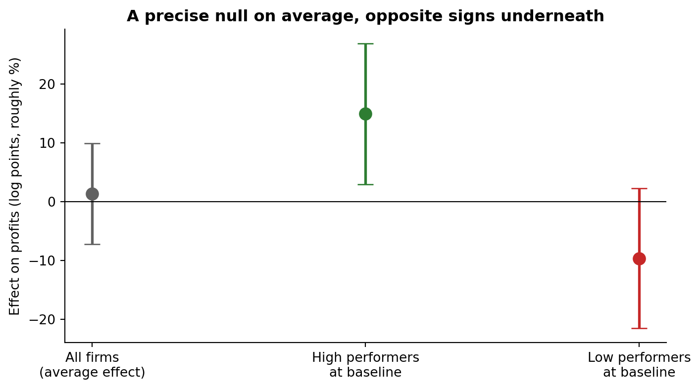
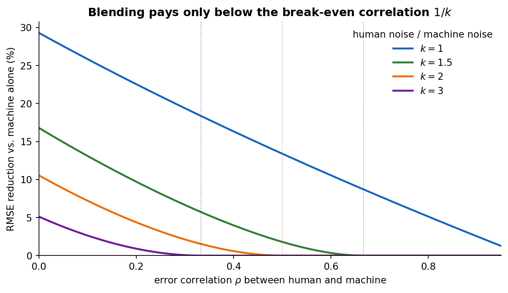
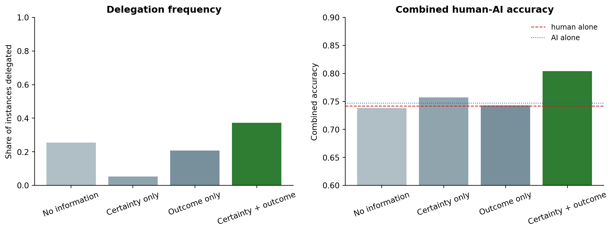
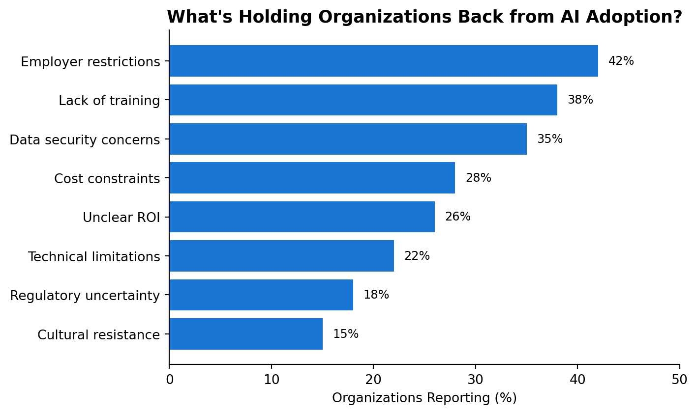
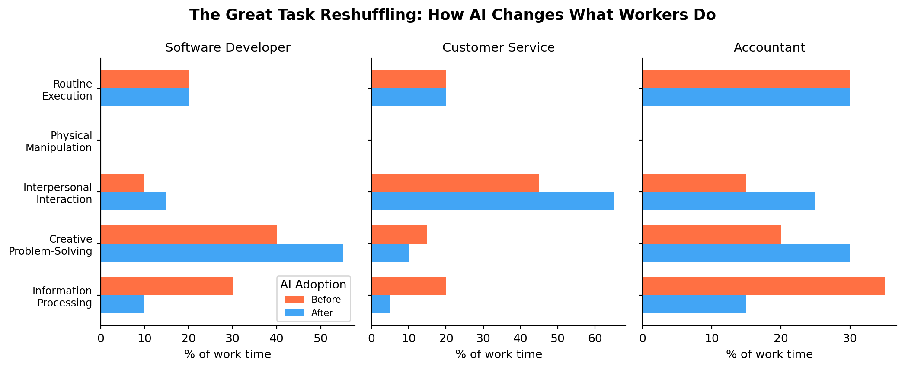
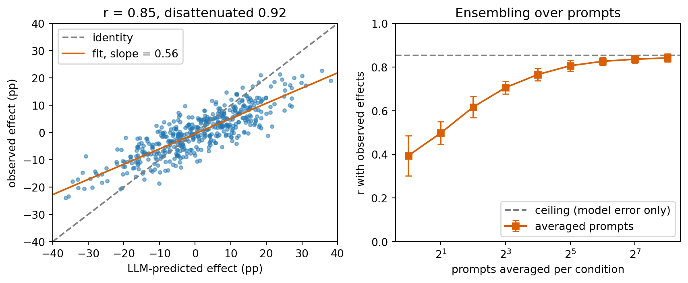
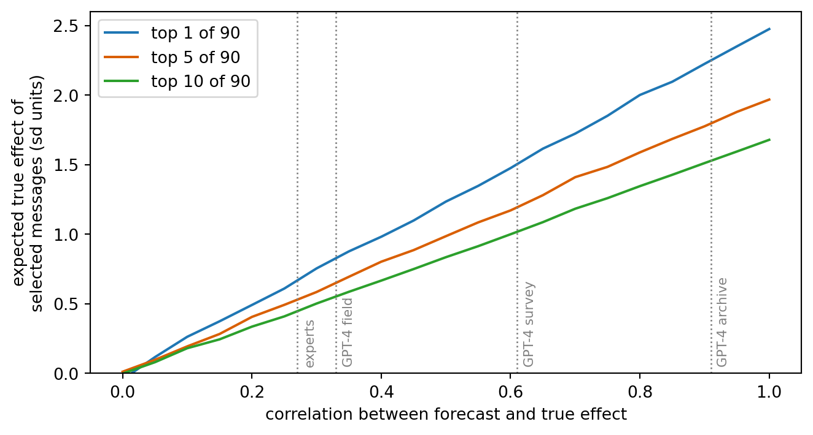
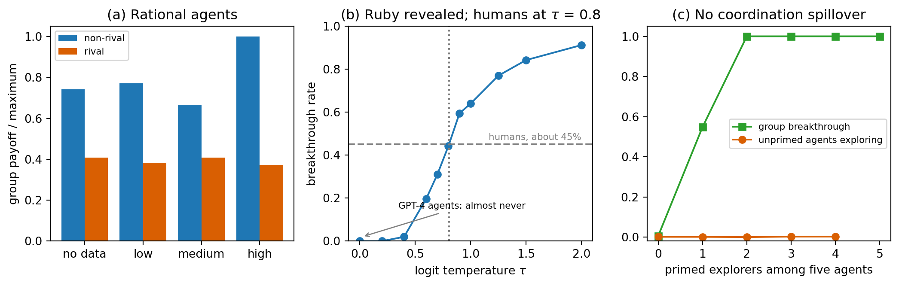
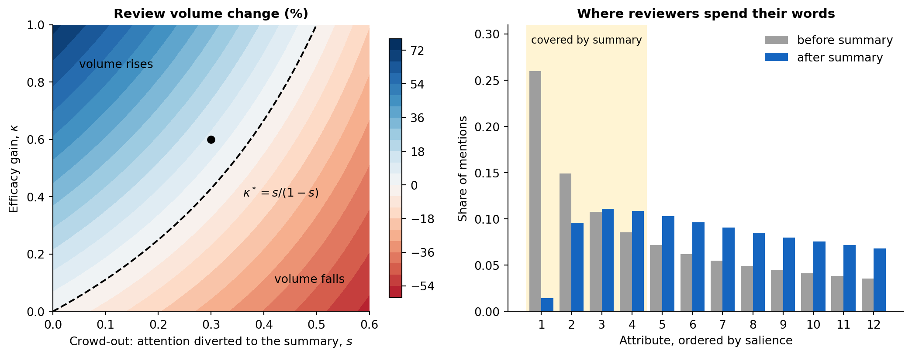

%%{init: {'theme':'neutral'}}%%
flowchart TD
A["Cheaper prediction over text and code"] --> B["Task-level automation and augmentation"]
B --> C["Individual productivity rises"]
B --> D["Task composition within jobs shifts"]
C --> E["Collective diversity can fall"]
D --> F["Labor demand: displacement vs reinstatement"]
F --> G["Heterogeneous wage and employment effects"]
E --> H["Policy: reward divergence and protect novelty"]
G --> I["Policy: retraining, safety nets, education"]
227 The Economics of Large Language Models: An Overview
How generative AI is reshaping work, creativity, productivity, and markets
Large language models (LLMs) are the first information technology in decades that economists have been able to study almost in real time, from the moment of mass adoption. This chapter surveys what the first wave of rigorous empirical and theoretical research tells us about the economic consequences of generative AI: how it changes individual productivity and collective diversity, how it reshapes labor demand, who adopts it and how intensively, and how it alters the economics of prediction, data, and platforms. The goal is an integrated reference. We first build the conceptual and mathematical scaffolding that organizes the evidence, then review the empirical findings domain by domain, and finally return to the theory to interpret the long-run questions that remain open.
A persistent theme is that the same technology produces opposite-signed effects at different levels of analysis. Generative AI tends to raise the average quality of individual output while compressing its variance, to lift the productivity of lower-skilled workers more than higher-skilled ones where tasks are structured and to reverse that gradient where they are not, and to expand what a single person can produce while narrowing what a population of people collectively explores. Holding these tensions together, rather than collapsing them into a single optimistic or pessimistic story, is the central analytical task of the chapter.
227.1 Conceptual Foundations
Before reviewing evidence, we fix definitions and the small amount of formal machinery that makes the empirical results legible. The economics of AI is, at its core, a relabeling of classical questions in the economics of technology, so the right starting point is the vocabulary that labor and innovation economists already use.
227.1.1 Generative AI as a general-purpose technology
Definition (general-purpose technology). A general-purpose technology (GPT) is a technology that is pervasive across sectors, improves rapidly over time, and spawns complementary innovations in the sectors that adopt it. Steam power, electricity, and the integrated circuit are the canonical examples.
Generative AI fits this definition on all three counts. It is pervasive, because text and code are inputs to almost every occupation. It improves rapidly, because capability scales with compute and data along empirically regular curves. And it is innovation-spawning, because adopting it forces firms to redesign workflows, which is where most of the eventual value is realized. The GPT framing matters for one practical reason: GPTs historically deliver their measured productivity gains only after a lag, once organizations rebuild processes around them. This is the standard explanation for the “productivity paradox” we revisit in Section 227.4.3, and it cautions against reading early aggregate statistics as the ceiling of AI’s impact.
227.1.2 The task-based view of work
The most useful lens for AI and labor is the task-based model developed by Autor, Levy, and Murnane (2003) and formalized by Acemoglu and Restrepo (2018) and Acemoglu and Restrepo (2019). An occupation is not an atom; it is a bundle of tasks, and technology acts on tasks, not on job titles. This is why AI can transform an occupation, reweighting which tasks dominate, without eliminating it.
Definition (task-based production). Output \(Y\) is produced by combining a continuum of tasks indexed by \(i \in [0,1]\). Each task can be performed by labor or by capital (here, AI). Let \(N\) denote labor and \(K\) denote AI capital. Aggregate output takes the constant-returns form \[ Y \;=\; B \exp\!\left( \int_0^1 \ln y(i)\, di \right), \qquad y(i) \;=\; \alpha_K(i)\, k(i) \;+\; \alpha_L(i)\, \ell(i), \] where \(y(i)\) is the quantity of task \(i\), and \(\alpha_K(i), \alpha_L(i)\) are the productivities of AI and labor at that task.
A task is automated when AI becomes weakly more cost-effective than labor at performing it, that is, when \[ \frac{\alpha_K(i)}{R} \;\ge\; \frac{\alpha_L(i)}{W}, \] where \(R\) is the rental cost of AI capital (compute, licensing, integration) and \(W\) is the wage. Define the automation frontier \(I^*\) as the threshold task such that all tasks \(i < I^*\) are performed by AI and all tasks \(i \ge I^*\) remain with labor. As AI improves, \(\alpha_K(i)\) rises and the frontier \(I^*\) moves right, displacing labor from newly automated tasks. Korinek and Suh call the moving boundary the complexity frontier (Korinek and Suh 2024); it is the same object viewed from the perspective of task difficulty.
This model yields three results that recur throughout the empirical literature.
Comparative advantage, not absolute advantage, determines who keeps a task. A worker does not need to beat AI at a task in absolute terms to retain it. Labor keeps the tasks where its relative productivity \(\alpha_L(i)/\alpha_K(i)\) is highest. This is why even highly capable AI leaves substantial work for humans: people reallocate toward the tasks where the gap is smallest.
Displacement and reinstatement are distinct forces. Automation of tasks below \(I^*\) is a displacement effect that reduces labor demand. But the same productivity gains, plus capital accumulation, can create new tasks above the old frontier, a reinstatement effect that raises labor demand. Acemoglu and Restrepo (2019) show that wages and the labor share rise or fall depending on which force dominates. The “race” in Section 227.9.1 is precisely the race between these two.
Wage effects are heterogeneous within occupations. Because workers hold different task portfolios, reweighting tasks creates winners and losers inside the same job title, exactly the pattern Freund and Mann (2025) document empirically (Section 227.5.1.4).
227.1.3 A worked example: automation, augmentation, and net labor demand
The model is easier to trust once instantiated with numbers. Consider an occupation made of three equally weighted task groups: routine information processing (R), analysis and judgment (A), and client interaction (C). A worker’s value added per unit time on each group, before AI, is \(\alpha_L = (10, 10, 10)\). Suppose AI raises effective productivity on the tasks the worker still performs (augmentation) but also takes over a share of routine tasks outright (automation).
Concretely, let AI automate 70% of the routine group and augment the worker on the remainder, multiplying human productivity by \(1.5\) on routine, \(1.4\) on analysis, and \(1.1\) on interaction. Per unit of the worker’s time, human-performed output becomes \[ \underbrace{(1-0.7)\cdot 10 \cdot 1.5}_{\text{routine}=4.5} \;+\; \underbrace{10\cdot 1.4}_{\text{analysis}=14} \;+\; \underbrace{10\cdot 1.1}_{\text{interaction}=11} \;=\; 29.5, \] versus \(30\) before AI. The worker’s output per hour on retained tasks is essentially unchanged, but the composition has shifted decisively away from routine work toward analysis and interaction. Whether headcount rises or falls now depends on demand elasticity. If the cheaper, faster service expands the market enough, the firm hires more of these workers (reinstatement dominates); if demand is inelastic, the same output needs fewer workers (displacement dominates). This single example reproduces, in miniature, why the empirical labor-market findings in Section 227.5 are mixed and context-dependent rather than uniformly negative: the sign of the employment effect is not a property of the technology alone but of the technology interacted with demand.
227.1.4 Automation versus augmentation
Definition (automation vs augmentation). AI automates a task when it performs the task in place of a human (capital substitutes for labor at that task). AI augments a worker when it raises the worker’s productivity at a task the worker still performs (capital complements labor). The same tool can do both, on different tasks, within the same job.
The distinction is not merely descriptive: it predicts the sign of the employment effect. Augmentation raises the marginal product of labor and tends to support or increase employment and wages; automation lowers labor demand for the affected tasks. The empirical regularity that AI helps lower-skilled workers most (Section 227.4.1.1) follows naturally, since novices spend a larger share of time on exactly the routine tasks where AI augmentation is largest and the quality gap to experts is widest.
227.1.5 AI as a reduction in the cost of prediction
A complementary framing, due to Agrawal, Gans, and Goldfarb, treats machine learning as a sharp drop in the cost of prediction. When the price of a fundamental input falls, three things happen: we use more of it, we use more of its complements, and we substitute away from things it replaces. The complements to cheap prediction are data (the input) and judgment (deciding what to predict and what to do with the prediction). This reframes many business problems as prediction problems: inventory management becomes demand prediction, lending becomes default prediction, and recruiting becomes performance prediction. The policy and organizational implications, including the unbundling of prediction from judgment, are developed in Section 227.17.1, and the policy reconsideration this forces is surveyed by Agrawal, Gans, and Goldfarb (2019).
LLMs extend this logic from numeric prediction to prediction over language and code, which is why their reach is so broad: almost every knowledge task contains a next-token-prediction subproblem somewhere inside it.
227.2 The Dawn of a New Economic Era
In November 2022, a seemingly simple chatbot named ChatGPT was released to the public. Within five days, it had attracted a million users. Within two months, it reached 100 million. By July 2025, approximately 10% of the world’s adult population, nearly 800 million people, had become active users (Chatterji et al. 2025). This explosive adoption represents not just another technology trend, but potentially the most rapid technological transformation in human history.
The speed of this transformation dwarfs previous technological revolutions. Where the personal computer took decades to reshape the workplace, and the internet required years of infrastructure development before achieving mainstream adoption, generative artificial intelligence has infiltrated offices, creative studios, and production floors with unprecedented velocity. As Bick, Blandin, and Deming (2026) document, work adoption of generative AI has matched the pace of personal computer adoption, while overall adoption has exceeded both PCs and the internet when measured from their first mass-market product launches.
Yet this is not merely a story of rapid adoption. It is a tale of fundamental transformation: one that is simultaneously enhancing human creativity while homogenizing it, dramatically boosting individual productivity while threatening entire categories of work, and creating opportunities for some while closing doors for others. The paradoxes embedded in this transformation demand careful examination, for they will shape not just our economic future, but the very nature of human work and creativity.
This chapter tells that story through the lens of rigorous empirical research, drawing on evidence from millions of workers, hundreds of thousands of firms, and dozens of controlled experiments conducted in the first three years of the generative AI revolution. What emerges is a complex portrait of technological change that defies simple narratives of either utopian enhancement or dystopian replacement.
227.3 The Questions That Matter
As we stand at this inflection point, several critical questions emerge:
The Creativity Question: Does AI enhance human creativity, or does it lead to a troubling convergence of ideas and expressions?
The Productivity Question: How much more productive can humans become when augmented by AI, and who captures these gains?
The Employment Question: Will AI complement or substitute for human workers, and how will this vary across different types of work?
The Inequality Question: Does AI level the playing field by helping lower-skilled workers catch up, or does it create new forms of digital divides?
The Adoption Question: Who is using these tools, how intensively, and what determines the pace and pattern of adoption?
This chapter systematically addresses each of these questions, building a picture of AI’s multifaceted impact on the modern economy.
227.3.1 The Creativity Paradox
227.3.1.1 The Dual Nature of AI-Enhanced Creativity
The impact of generative AI on human creativity presents us with our first paradox. In a carefully controlled experiment, Doshi and Hauser (2024) asked writers to craft short stories, with some receiving AI-generated ideas as inspiration. The results were striking: stories written with AI assistance were judged to be more creative, better written, and more enjoyable to read. The effect was particularly pronounced for writers who scored lower on baseline creativity measures, AI appeared to be democratizing creative excellence.
But there was a catch. When the researchers analyzed the similarity between stories, they discovered something troubling: AI-assisted stories were significantly more similar to each other than stories written by humans alone. The technology that made individual writers more creative was simultaneously making collective creativity more homogeneous.
This finding illuminates a fundamental tension in the age of AI. As Doshi and Hauser (2024) frame it, we face a social dilemma: writers are individually better off using AI, but collectively, society produces a narrower scope of novel content. It’s as if AI provides everyone with a more powerful creative engine, but all the engines are manufactured in the same factory, running on the same fuel, producing variations on the same underlying patterns.
227.3.1.2 The Homogenization Effect: A Deeper Look
To understand why this homogenization occurs, we must consider how generative AI works. These systems are trained on vast corpora of existing human creative works, learning patterns, styles, and structures that appear most frequently in their training data. When humans use AI for creative assistance, they’re essentially tapping into a statistical distillation of past human creativity. The AI suggests ideas that are, by design, probable given what has come before.
This creates what we might call a “creative gravity well”, AI suggestions pull human creators toward the center of the distribution of existing ideas rather than pushing them toward the edges, where true innovation occurs. The most creative individuals, who might naturally gravitate toward unusual or unprecedented ideas, find themselves gently guided back toward the mainstream. Meanwhile, less naturally creative individuals are lifted up toward this same center point, improving their individual output but contributing to an overall convergence (Figure Figure 227.2).
This is no longer just a plausible mechanism inferred from one creative-writing study. Jiang et al. (2025) (NeurIPS 2025 Best Paper) name the effect the Artificial Hivemind and measure it directly at scale, independent of any specific creative task. They build Infinity-Chat, a benchmark of 26,000 real-world, open-ended queries that by construction admit many equally valid answers (no single ground truth), together with 31,250 human judgments (25 independent annotations per example) to establish what a healthy spread of good answers actually looks like. Two distinct failure modes emerge. Intra-model repetition: a single model asked the same open-ended question multiple times (at typical sampling temperatures) returns answers that cluster far more tightly than the space of genuinely good answers would allow, the model’s own generations pull toward the center of its own distribution. Inter-model homogeneity: different model families, trained by different labs on different data, nonetheless converge toward strikingly similar answers to the same open-ended prompt, a pattern the single-model, single-lab framing of the “creative gravity well” cannot fully explain. Both failure modes point to the same underlying force: likelihood-maximizing training (pretraining, then instruction tuning and RLHF, which further sharpens a model toward whatever raters found most acceptable) systematically discounts a correct but unusual answer relative to a typical one, and does so in a training-data-driven way that different labs, using overlapping web-scale corpora and similar alignment recipes, end up reproducing in common. The economic reading is direct: as AI-assisted output captures a larger share of the visible text, image, and code that future models and future human creators draw on, the “gravity well” is not merely a per-writer effect but a compounding, population-level one, each generation of tools trained partly on the last generation’s homogenized output has a narrower distribution to pull toward.
%%{init: {'theme':'neutral'}}%%
flowchart TD
A["Human Creators"] --> B{"Without AI"}
B --> C["Wide Distribution of Creative Output"]
C --> D["High Variance, Low Average Quality"]
A --> E{"With AI"}
E --> F["AI Suggestions"]
F --> G["Convergence Toward Statistical Center"]
G --> H["Low Variance, High Average Quality"]
style C fill:#e1f5fe
style D fill:#e1f5fe
style G fill:#fff3e0
style H fill:#fff3e0
227.3.1.3 The Advertising Revolution and Consumer Perception
Yet perhaps the most revealing test of AI’s creative paradox comes not from artistic domains but from commercial ones. In advertising, where creativity is explicitly measured against concrete outcomes (e.g., engagement, recall, purchase intent), we can examine whether the quality improvements and homogenization effects observed in the creative industries hold true. Moreover, advertising offers a unique lens: consumers encounter AI-generated creative work, and their reactions reveal something crucial about whether the creative convergence problem is merely academic or fundamentally matters in the real world.
Hartmann, Exner, and Domdey (2025) conducted pioneering experiments systematically comparing AI-generated to human-made marketing images across critical dimensions. Using state-of-the-art generative text-to-image models, they created synthetic marketing images based on real-world human-made examples. Their findings were striking: human evaluators rated AI-generated marketing imagery as superior to human-made images in quality, realism, and aesthetics. When given identical creative briefings, AI models also excelled in ad creativity, ad attitudes, and prompt following compared to commissioned human freelancers. Most tellingly, a field study with over 100,000 impressions demonstrated that AI-generated banner ads achieved up to 50% higher click-through rates than professional human-made stock photography. These results suggest that generative AI can enable advertisers to produce marketing content not only faster and orders of magnitude cheaper, but also at superhuman effectiveness levels.
227.3.2 Implications for Creative Industries
The creativity paradox has profound implications for industries built on novelty and differentiation. Consider the publishing industry, where the discovery of fresh voices and perspectives has traditionally been a key value proposition. If AI assistance leads to a convergence of writing styles and story structures, publishers may find it increasingly difficult to identify truly distinctive work. The slush pile may become more professionally written but less varied, making the discovery of breakout talent paradoxically harder.
Similarly, in advertising and marketing, where differentiation is paramount, the widespread adoption of AI tools could lead to a troubling sameness in campaigns and messaging. While each individual campaign might be more polished and effective than before, the collective impact might be a marketplace of ideas that feels increasingly homogeneous.
This paradox suggests that as AI tools become more prevalent, the ability to deliberately diverge from AI suggestions, to recognize and resist the pull of the statistical center, may become a crucial creative skill. Organizations may need to develop new practices and metrics to ensure they’re not just optimizing for immediate quality improvements but also preserving the diversity and novelty that drive long-term innovation.
227.4 The Productivity Revolution
227.4.1 The Magnitude of Productivity Gains
While the impact on creativity presents us with paradoxes, the effect on productivity appears more straightforwardly positive, at least at first glance. The numbers are striking: Brynjolfsson, Li, and Raymond (2025) found that customer support agents with access to AI assistance resolved 15% more issues per hour on average. Peng et al. (2023) documented that software developers with AI pair programmers completed coding tasks 55.8% faster. Jung Ho Choi and Xie (2025) observed that accountants using AI increased their weekly client support by up to 59% when comparing highest to lowest usage levels.
These are not marginal improvements. They represent potentially transformative gains in human productivity, comparable to or exceeding those achieved by previous general-purpose technologies. To put this in perspective, the introduction of the assembly line in manufacturing typically improved productivity by 20-30% (Karim, Tuan, and Emrul Kays 2016). The personal computer revolution of the 1980s and 1990s generated annual productivity growth of about 1-2% (Dedrick, Gurbaxani, and Kraemer 2003). The productivity gains from AI appear to be arriving faster and at a larger magnitude than these previous technological revolutions.
227.4.1.1 The Heterogeneity of Impact
But these aggregate numbers mask enormous variation in who benefits and by how much. One of the most consistent findings across studies is that AI tends to help lower-skilled workers more than higher-skilled ones. Brynjolfsson, Li, and Raymond (2025) found that novice customer service workers improved while experienced workers saw minimal gains. Noy and Zhang (2023) documented similar patterns among professional writers, with weaker performers benefiting most from ChatGPT assistance.
This pattern suggests that AI might serve as a “great equalizer” in the workplace, reducing skill-based inequality by bringing lower performers closer to the productivity levels of top performers. However, the equalizer interpretation has boundary conditions, and they are not a footnote: the largest field experiment to test the pattern outside structured employment found the gradient running the other way.
227.4.1.2 When the Gradient Reverses: Evidence from Kenyan Entrepreneurs
Look closely at where the equalizer results come from and a common structure emerges. Call center agents (Brynjolfsson, Li, and Raymond 2025), professional writers completing assigned tasks (Noy and Zhang 2023), and consultants working inside the frontier of AI capability (Dell’Acqua et al. 2023) all operate in settings where the task is given, the workflow is defined, and the AI has, in effect, distilled the practices of top performers into suggestions a weaker performer can apply directly. In those settings the technology substitutes for precisely the expertise the low performer lacks, so it compresses the skill distribution from below.
Otis et al. (2026) ran the natural stress test of that structure: a five-month randomized field experiment with 640 small business owners in Kenya, one of the first completed randomized controlled trials of generative AI advice in a real market, now published in Management Science. The treatment group received access to a GPT-4 powered “AI business mentor” over WhatsApp, a channel already used by roughly 90% of Kenyans; the control group received a standard small-business guide. On average, the AI mentor did nothing: the experiment could not reject a zero effect on either revenues or profits. The average, however, was a compositional illusion. The treatment effect for entrepreneurs who were low performers at baseline was more than 0.2 standard deviations below the effect for baseline high performers. In percentage terms, the point estimates suggest that high performers may have benefited by over 15% while low performers ended up nearly 10% worse off than their control-group counterparts.
The mechanism is the most instructive part. The divergence was not driven by advice quality: the mentor gave broadly comparable advice to both groups, and both groups engaged with it. It was driven by what the two groups asked and what they did next. High performers brought bounded, operational questions, a restaurant owner deliberating a menu change, a milk seller weighing adjacent products, and then implemented the answers. Low performers, facing weak revenues, brought survival-level problems: severe competition, drought, a shortage of working capital. Against problems like these, textbook best practice is hard to execute, and the study traces the divergent outcomes to entrepreneurs’ implementation choices rather than to differences in the advice itself. In the language of Section 227.1.5, the binding constraint for struggling firms was never the price of prediction or the availability of advice; it was the judgment and the complementary resources needed to act on it.
The Kenya experiment is the sharpest demonstration, but it is not an outlier; it belongs to a growing family of results showing that who benefits from AI assistance is a joint property of the user, the task, and the collaboration design rather than a fixed attribute of the technology. Dell’Acqua et al. (2023) found that consultants using GPT-4 on a task deliberately chosen to sit outside the model’s capability frontier were 19 percentage points less likely to produce a correct answer than unassisted consultants, with the tool’s fluency masking the boundary. In radiology, Agarwal et al. (2023) ran an information experiment in which professional radiologists received predictions from an AI system more accurate than most of them; assistance still failed to improve average diagnostic performance, because radiologists underweighted the AI’s predictions and treated them as statistically independent of their own assessments, and the authors calculate that the optimal collaboration design would delegate each case entirely to the human or entirely to the AI rather than blend the two. And Caplin et al. (2025) show that measured gains from AI assistance track a worker’s calibration, their knowledge of when to trust the model and when to override it, more than the worker’s raw ability. Section 227.4.1.5 turns that observation into a design question, asking what a system has to show a user for such calibration to develop at all.
A field experiment outside knowledge work sharpens what “lower-skilled” should mean in these comparisons. Knight, Mitrofanov, and Netessine (2026) ran a large-scale randomized rollout of an algorithm-enabled wayfinding tool, which helps grocery shoppers locate and collect items in the store, across gig workers on the Instacart platform from June to September 2022, tracking picking time for efficiency and refund rates for service quality. The tool’s effects split along two dimensions that the customer service and writing studies tend to collapse into one. With respect to experience, the technology was a complement: more experienced shoppers gained more from it, not less, so it did not erode the value of time on the job. With respect to skill level, it was a substitute: lower-skilled shoppers closed part of the gap with their higher-skilled peers, which reduced performance dispersion and made service quality more uniform. The two interact, because lower-skilled shoppers needed experience before they could fully benefit, and the treatment effects also varied with workload and task complexity, which locates when algorithmic guidance is most valuable. The authors draw a deployment rule that travels well beyond grocery picking: give workers some baseline experience before introducing the tool, and stage the rollout with basic training rather than handing it to novices on day one. Read alongside Brynjolfsson, Li, and Raymond (2025), where novices gained the most, the result says that “novice” and “low performer” are different variables, and an evaluation that conflates them can reach opposite conclusions about the same tool.
The statistical lesson deserves a figure, because it recurs throughout this literature: an average treatment effect near zero is not evidence that nothing happened. The simulation below is calibrated to the reported magnitudes of the Kenya experiment, with 640 firms, half treated, a positive effect for baseline high performers, and a negative effect for baseline low performers. It is illustrative, not the study’s data.

The pooled estimate sits near zero with a tight confidence interval even though essentially every firm was affected; the subgroups pull in opposite directions, and the contrast between them, not either subgroup alone, is the economically meaningful object. Any evaluation of an AI deployment that reports only a single average, whether in a firm rollout or a development program, should be presumed incomplete until it has been disaggregated by baseline capability. Section 227.17.1.4 makes the complementary methodological point for research designs that use LLMs as instruments.
227.4.1.3 Blending or Delegating: The Arithmetic of Hybrid Forecasts
The radiology result is not an isolated disappointment. It is one instance of a general problem that Karimi and Carvalho (2026) survey under the name hybrid intelligence forecasting (HIF), the practice of combining human judgment with machine prediction into a single sociotechnical ensemble. Their review organizes the literature around three pillars. Collectivity asks how the two forecasts are actually combined, and how trust and error correlation shape that combination. Superior results asks under what conditions the ensemble beats its best individual component. Continuous learning asks whether the human and the model keep adapting to one another across repeated rounds. The verdict is that hybrid systems frequently do improve predictive accuracy, across many domains and methods, but that the improvement is conditional rather than automatic, and that the field’s persistent weak points are exactly trust calibration, correlation management, and iterative co-learning. That framing is the operational counterpart of the cheap-prediction argument in Section 227.1.5: prediction gets cheap, judgment stays scarce, and the interesting engineering question becomes how to wire the two together.
The first two pillars have a closed form worth carrying around. Take a human forecast \(f_h\) and a machine forecast \(f_m\) of the same quantity \(y\), both unbiased, with errors \(e_h = y - f_h\) and \(e_m = y - f_m\) of variances \(\sigma_h^2\) and \(\sigma_m^2\) and correlation \(\rho\). The combination \(f_w = w f_h + (1 - w) f_m\) has error variance
\[ V(w) = w^2 \sigma_h^2 + (1 - w)^2 \sigma_m^2 + 2 w (1 - w) \rho \sigma_h \sigma_m , \tag{227.1}\]
which is minimized at the classical combination weight of Bates and Granger (1969),
\[ w^\star = \frac{\sigma_m^2 - \rho \sigma_h \sigma_m}{\sigma_h^2 + \sigma_m^2 - 2 \rho \sigma_h \sigma_m} , \qquad V(w^\star) = \frac{\sigma_h^2 \sigma_m^2 (1 - \rho^2)}{\sigma_h^2 + \sigma_m^2 - 2 \rho \sigma_h \sigma_m} . \tag{227.2}\]
Let \(k = \sigma_h / \sigma_m\) measure how much noisier the human is than the machine, and suppose the machine is the more accurate forecaster, \(k \ge 1\). The human earns positive weight, \(w^\star > 0\), exactly when
\[ \rho < \frac{1}{k} = \frac{\sigma_m}{\sigma_h} . \tag{227.3}\]
Three consequences follow, and each maps onto one of the review’s open problems. First, blending is not always the right design. When \(\rho \ge 1/k\) the unconstrained optimum puts negative weight on the human, so under the natural constraint \(w \in [0, 1]\) the solution sits at a corner and the correct policy is delegation, routing the case entirely to one forecaster. That is precisely the design Agarwal et al. (2023) compute for radiology, and Equation 227.3 says why: when a human and a model read the same image and were trained, in their different ways, on overlapping evidence, their errors are correlated enough that averaging buys nothing. Second, and pointing the other way, a substantially worse forecaster is still worth including if its errors are different enough. A human twice as noisy as the model, \(k = 2\), improves on the model alone for any \(\rho < 0.5\), which is a much weaker requirement than being competitive with the model. Accuracy comparisons between humans and models, the staple of benchmark reporting, are therefore the wrong statistic for deciding whether to keep a human in the loop. The right statistic is the pair \((k, \rho)\).
Third, none of \(\sigma_h\), \(\sigma_m\), and \(\rho\) is a constant, which is what makes the continuous-learning pillar hard. Models are retrained on data that humans influenced, humans adjust their judgments after seeing model output, and both effects push \(\rho\) up over time. A deployment that cleared Equation 227.3 at launch can quietly stop clearing it a year later, with no visible change in either party’s standalone accuracy. This is the ensemble-accuracy version of the homogenization result in Section 227.3.1.2: when everyone consults the same distribution, the population’s errors converge, and correlated errors are exactly what destroys the value of combining forecasts. The radiology experiment shows the two remaining failure modes at once, a weight the radiologists applied to the model that sat far below \(w^\star\), which is a trust-calibration failure, and a treatment of the model’s prediction as statistically independent of their own reading, which is a misspecified \(\rho\). Caplin et al. (2025) measure the first of these directly and find that it predicts realized gains better than raw ability does.

k = 1.0: break-even rho = 1.00, RMSE reduction at rho = 0.0 is 29.3%, at rho = 0.5 is 13.4%
k = 1.5: break-even rho = 0.67, RMSE reduction at rho = 0.0 is 16.8%, at rho = 0.5 is 1.8%
k = 2.0: break-even rho = 0.50, RMSE reduction at rho = 0.0 is 10.6%, at rho = 0.5 is 0.0%
k = 3.0: break-even rho = 0.33, RMSE reduction at rho = 0.0 is 5.1%, at rho = 0.5 is 0.0%The practical instruction is short. Before committing to a human-in-the-loop design, estimate \(k\) and \(\rho\) on held-out cases rather than assuming that a human reviewer must add value, then choose blending or delegation accordingly, and re-estimate both on a schedule because they drift. Karimi and Carvalho (2026) close their review by calling for exactly this kind of standardized reporting, on the grounds that the HIF literature currently reports accuracy gains without the conditions that produced them, which is why its results generalize so poorly from one deployment to the next.
227.4.1.4 Context Dependence Within a Single Workplace
Heterogeneity across users is one axis; heterogeneity across contexts for the same workers is another, and it shows that the sign of AI’s effect can flip from one conversation to the next. Zhang and Narayandas (2026) randomized whether customer service agents at a meal delivery company received AI-generated response suggestions during live chats. The average results read like a cleaner replay of Brynjolfsson, Li, and Raymond (2025): assisted agents responded faster, engaged customers more deeply, and left customers measurably more satisfied, with the gains concentrated among less-experienced agents and a text analysis attributing the improvement to responses carrying more empathy, more information, and more concrete solutions. Two boundary results, however, turn the study from a confirmation into a caution. The gains were strongest in subscription cancellation conversations but essentially absent in repeat-complaint conversations, where the underlying problem was systemic and beyond anything an agent could fix with better phrasing. And for customers who had just experienced a comprehension failure with the company’s front-line chatbot before reaching a human, AI assistance backfired: the unusually fast, polished replies from an AI-assisted human read as more chatbot, and sentiment fell. The same suggestion engine, operating on the same agents in the same queue, improved outcomes in one conversational context and damaged them in the adjacent one.
227.4.1.5 Information Design for Delegation: Why Two Signals Beat One
Who benefits and in which context are properties of the deployment that a designer mostly inherits. A third axis sits under direct design control: what the system tells the user at the moment the user decides who should handle the task. Fügener et al. (2022) established the problem in a controlled classification setting in which the AI was more accurate than most of the human subjects. Combined human-AI accuracy beat the AI working alone whenever the AI allocated instances between itself and a human. The same complementarity disappeared once humans made the allocation. The authors trace that failure to a metaknowledge deficit. Subjects could not judge their own competence at the level of the individual instance, so their choices carried almost no information about where the AI held the advantage. Algorithm aversion does not account for the gap, because the subjects followed the delegation strategy they were given conscientiously and appeared to value the AI’s support.
Taudien et al. (2026) ask whether system information can repair that deficit. Their answer reframes how such information should be evaluated. They cross two signals in a factorial experiment. Ex-ante AI certainty is the model’s estimated probability of being correct on the instance in front of the user, displayed before the delegation decision. Ex-post AI outcome information reveals whether the AI was actually correct, displayed after the decision. Either signal on its own left combined human-AI performance flat or made it worse. The two signals together raised delegation frequency and delegation effectiveness at once, so users delegated more instances while also selecting better instances to delegate, which is what turned delegation into a genuine performance gain.
The mechanism is a division of labor between the signals. Certainty acts before the decision and sets an expectation at the instance level, telling the user which cases the model treats as easy. Outcomes act after the decision and confirm or disconfirm that expectation, which is the step that converts a displayed number into experienced accuracy. Certainty without outcomes is a scale with no units. The user can see that 0.9 ranks above 0.7 while holding no evidence about what either number buys, so a conservative discount survives, which is the form unwarranted algorithm aversion takes at the keyboard, holding delegation down. Outcomes without certainty deliver evidence at the wrong resolution. The user learns roughly how often the AI is right in aggregate while gaining no purchase on which instances those successes came from, which supports a single global trust level with no instance-level selectivity. Supplied together, the two signals build a mental model of the AI’s competence that is accurate at the granularity where delegation decisions are actually made. The simulation below formalizes that argument on synthetic instances, with a calibrated AI, a human who is better on some instances and worse on others, and a noisy self-assessment standing in for the metaknowledge deficit.

Four readings come out of the synthetic run. Undirected delegation is worse than no delegation: the no-information arm hands over a quarter of the instances at random and lands slightly below the human working alone, because random selection dilutes the human’s advantage without exploiting the AI’s. Certainty alone moves the combined score very little, since the unverified display is discounted so heavily that it clears the self-estimate on only a few percent of instances. Outcome feedback alone moves the delegation rate while leaving the choice of instances undirected, so the combined score stays near the baseline. Only the pair delegates both often and selectively. The resulting combined accuracy clears the human alone as well as the AI alone, which is the complementarity that Fügener et al. (2022) found human-side delegation failing to capture.
Three design lessons follow. Information bundles are the right unit of evaluation, because the isolated effect of a signal can be zero or negative while its interaction with a second signal is strongly positive. An A/B test that adds a confidence display on its own, finds nothing, and retires the idea has measured the weakest configuration of the bundle. Shipping certainty also obliges the designer to close the loop, since a certainty display with no path for realized outcomes to reach the user is precisely the configuration the experiment finds harmful. Agentic deployments make that loop cheap on verifiable work, where the outcome of a delegated task is checkable at low cost, which is the same condition that makes the delegation-heavy higher-order work of Section 227.5.1.3 pay off. The ex-ante number finally has to be worth believing, which makes calibration a property the model must earn before the interface can use it, a requirement the model-calibration chapter treats in detail.
227.4.2 The Mechanisms of Productivity Enhancement
To understand how AI generates these productivity gains, researchers have identified several key mechanisms:
227.4.2.1 Knowledge Dissemination
Brynjolfsson, Li, and Raymond (2025) provide evidence that AI systems effectively capture and disseminate the best practices of high-performing workers. The AI learns from patterns in successful interactions and then guides less experienced workers toward these proven approaches. It’s as if every worker suddenly has access to a mentor who has absorbed the collective wisdom of the organization’s best performers.
227.4.2.2 Cognitive Offloading
Hoffmann et al. (2025) document how AI enables software developers to shift their attention from routine coding tasks to higher-level design and problem-solving. By handling boilerplate code generation and routine debugging, AI frees up cognitive resources for more complex and creative tasks. This represents a fundamental shift in how knowledge work is performed, from doing the work to directing and refining AI’s output.
227.4.2.3 Time Reallocation
Dillon et al. (2025) found that workers with AI access spent two fewer hours per week on email and reduced their time working outside regular hours. This suggests that AI doesn’t just make workers faster at existing tasks but enables them to reallocate time toward higher-value activities or achieve better work-life balance (Figure Figure 227.6).
%%{init: {'theme':'neutral'}}%%
graph LR
A["Traditional Work Process"] --> B["Manual Task Execution"]
B --> C["Quality Checking"]
C --> D["Iteration and Refinement"]
D --> E["Final Output"]
F["AI-Augmented Process"] --> G["Task Delegation to AI"]
G --> H["Rapid Iteration"]
H --> I["Human Oversight and Direction"]
I --> J["Enhanced Output"]
style A fill:#ffebee
style F fill:#e8f5e9
K["Time Saved"] --> L["Reallocation"]
L --> M["Strategic Thinking"]
L --> N["Relationship Building"]
L --> O["Learning and Development"]
L --> P["Work-Life Balance"]
style K fill:#fff9c4
227.4.3 The Productivity Paradox of Our Time
Despite these impressive gains at the individual level, Dillon et al. (2025) raise an important question: why don’t we see larger shifts in aggregate productivity statistics? They found that while individual workers saved significant time, there were no detectable changes in the overall quantity or composition of tasks being completed at the organizational level.
This recalls the famous “productivity paradox” of the computer age, when Robert Solow quipped in 1987 that “you can see the computer age everywhere but in the productivity statistics.” Several explanations may apply to the current AI revolution:
227.4.3.1 The Adjustment Period Hypothesis
Organizations may need time to restructure their processes to fully capture AI’s benefits. Current productivity gains might be absorbed by organizational slack rather than translating into increased output or reduced employment.
227.4.3.2 The Quality vs. Quantity Trade-off
Organizations might be using AI-generated time savings to improve quality rather than increase quantity. Jung Ho Choi and Xie (2025) found that AI use in accounting led to more granular financial reporting and faster monthly closes, improvements in quality and timeliness rather than volume.
227.4.3.3 The Complementary Investment Challenge
Realizing AI’s full potential may require complementary investments in training, process redesign, and organizational restructuring that take time to implement. The productivity gains we observe now might be just the tip of the iceberg.
227.4.3.4 Writing Code vs. Shipping Code: Measuring the Attenuation Directly
The three explanations above share an inconvenience: they are hard to test, because task-level productivity studies and aggregate statistics usually come from different data describing different people. Demirer, Musolff, and Yang (2026) close that gap in the domain where AI adoption runs deepest, software development, by observing the same developers at every stage of a single production pipeline. Software production is naturally hierarchical: lines of code are assembled into files, files into commits, commits into pull requests that must be reviewed and merged, pull requests into projects, and projects into shipped releases. Combining public GitHub data on more than 100,000 developers with usage telemetry identifying when each developer first adopted each generation of AI coding tool, the authors measure activity at every layer of that hierarchy in a matched event study: each adopter is compared with a control developer matched on pre-adoption activity in the same calendar week one year earlier, a design chosen so that the comparison group is not contaminated by the later, near-universal availability of the same tools. Placebo adoptions of non-AI developer tools show no comparable effects, treated and control developers exhibit no differential pre-trends, and the estimates for the earliest generation line up with the field-experimental evidence of Cui et al. (2025) for the same tool in the same period.
The generational dimension is what makes the study more than a replication at scale. It spans three successive waves of tools from 2022 to 2026, each automating production one layer higher. Autocomplete (GitHub Copilot at launch) accelerates the writing of individual lines while the developer still produces everything else. Sync agents (from early 2025, interactive agentic tools such as GitHub Copilot’s agent mode, Claude Code, and Codex) generate code and files directly under real-time supervision and assist in assembling commits and pull requests. Async agents (from mid-2025) are assigned an issue and return a complete draft pull request from a cloud machine, automating everything up to and including the pull request itself. No generation touches the top of the hierarchy: reviewing and merging the pull request, integrating it into a project, and shipping a release remain human work throughout.
Task-level effects are large and rise steeply across generations. Adopting autocomplete raises a developer’s commits by roughly 40%; adding sync agents lifts the cumulative effect to about 140%; adding async agents brings it to about 180%. The gains are largest for less active developers, the familiar gradient of Section 227.4.1.1, but remain substantial across the whole activity distribution, and their timing tracks the release dates of major models. They also attenuate sharply as output climbs the hierarchy. For autocomplete, a 228% increase in lines of code becomes a 36% increase in commits and a 10% increase in releases. For sync agents, a 741% increase in lines of code becomes a 65% increase in pull requests and a 20% increase in releases. For the full stack including async agents, the 180% effect on commits falls to 50% for the number of projects and 30% for actual releases. Writing code has exploded; shipping code has grown modestly.
The mechanism the authors propose formalizes the weak-link logic that discussions of the productivity paradox usually leave implicit.
Definition (hierarchical weak-link production). Software output is produced through \(S\) ordered layers. The bottom layer is written code, \(y_1 = e_1\), and each higher layer \(s \ge 2\) combines the output of the layer below with layer-specific effective input through a CES aggregator \[ y_s \;=\; \Big[\, \alpha_s\, y_{s-1}^{\frac{\sigma-1}{\sigma}} \;+\; (1-\alpha_s)\, e_s^{\frac{\sigma-1}{\sigma}} \,\Big]^{\frac{\sigma}{\sigma-1}}, \qquad e_s \;=\; B_s\, h^{p}_{s} \;+\; \min\!\big(a_s,\; \phi_s\, h^{r}_{s}\big), \] where \(\alpha_s\) is a share parameter and \(\sigma > 0\) is the elasticity of substitution between upstream output \(y_{s-1}\) and the effective input \(e_s\) at layer \(s\). Effective input mixes the developer’s direct effort \(h^{p}_{s}\), amplified by an augmentation factor \(B_s \ge 1\), with AI-generated output \(a_s\), which becomes useful only in proportion to the review effort \(h^{r}_{s}\) spent validating it; \(\phi_s\) measures how much AI output one unit of review can validate. Augmentation is \(B_s > 1\); partial automation is \(a_s > 0\) with \(\phi_s\) finite; full automation is the limit \(\phi_s \to \infty\), in which AI output needs no review at all. The Leontief term \(\min(a_s, \phi_s h^{r}_{s})\) encodes the model’s sharpest assumption: unreviewed AI output contributes nothing (Demirer, Musolff, and Yang 2026).
The elasticity \(\sigma\) single-handedly governs how far task-level gains travel. Log-differentiating the CES layer gives the pass-through elasticity \[ \frac{\partial \ln y_s}{\partial \ln y_{s-1}} \;=\; \theta_s \;=\; \frac{\alpha_s\, y_{s-1}^{\frac{\sigma-1}{\sigma}}}{\alpha_s\, y_{s-1}^{\frac{\sigma-1}{\sigma}} \;+\; (1-\alpha_s)\, e_s^{\frac{\sigma-1}{\sigma}}} \;\in\; (0,1), \] and elasticities multiply along the chain, so a shock at layer \(s\) reaches final output with cumulative elasticity \(\prod_{s'=s+1}^{S} \theta_{s'}\). At \(\sigma = 1\) the pass-through is the constant \(\alpha_s\) however large the shock. At \(\sigma < 1\) the exponent \((\sigma-1)/\sigma\) is negative, so \(\theta_s\) falls as upstream output grows: the more AI inflates a lower layer, the smaller that layer’s weight in the aggregate becomes, and the less any further inflation matters. In the limit \[ \lim_{y_{s-1} \to \infty} y_s \;=\; (1-\alpha_s)^{\frac{\sigma}{\sigma-1}}\, e_s \;<\; \infty, \] a finite ceiling proportional to the human effort remaining at layer \(s\): unbounded automation of code writing buys a bounded increase in shipped software. This is the O-ring production function of Kremer (1993) and the weak links of Jones (2011) transplanted from development economics into a single firm’s toolchain, with the weakest link now the least-automated human layer. The attenuation pattern in the data is consistent with \(\sigma \approx 0.25\), deep in the complements region, and with autocomplete entering only at the code-writing layer while sync and async agents intervene further up. At \(\sigma = 0.25\) the aggregator is close to a \(\min(\cdot)\) function: every layer is governed by its scarcer input, and once AI floods the layers below, the scarcer input everywhere above is human review and release effort.
The simulation below propagates illustrative per-layer input boosts for each tool generation through this hierarchy, at the estimated \(\sigma = 0.25\) and, for contrast, at a mildly substitutable \(\sigma = 1.25\). The boosts are chosen so the code-layer and commit-layer effects land near the reported magnitudes; the object of interest is the shape of the decline.
import numpy as np
STAGES = ["code", "files", "commits", "PRs", "projects", "releases"]
SHOW = {"code", "commits", "projects", "releases"}
def hierarchy(boosts, sigma, alpha=0.7):
"""Output at each layer of the software production hierarchy, relative
to a no-AI baseline of 1.0, when AI multiplies the effective input at
layer s by boosts[s] (weak-link model of @demirer2026writing). Each
layer is a CES aggregate of upstream output and its own input."""
rho = (sigma - 1) / sigma
y, out = boosts[0], [boosts[0]]
for e in boosts[1:]:
y = (alpha * y**rho + (1 - alpha) * e**rho) ** (1 / rho)
out.append(y)
return out
# Boosts follow the paper's tool-to-layer mapping: autocomplete augments only
# code writing; sync agents generate code and files under live review and
# assist commit and PR assembly; async agents generate output through the PR
# layer. Review, integration, and release stay human (boost 1.0) throughout.
generations = {
"autocomplete": [3.3, 1.0, 1.0, 1.0, 1.0, 1.0],
"+ sync agents": [8.4, 6.0, 1.6, 1.3, 1.0, 1.0],
"+ async agents": [12.0, 9.0, 1.9, 1.6, 1.0, 1.0],
}
for sigma, label in [(0.25, "strong complements, the estimated value"),
(1.25, "mild substitutes, for contrast")]:
print(f"sigma = {sigma} ({label})")
for name, boosts in generations.items():
y = hierarchy(boosts, sigma)
path = " ".join(f"{s} +{100 * (v - 1):.0f}%"
for s, v in zip(STAGES, y) if s in SHOW)
print(f" {name:<16s}{path}")
print()
print("observed (cumulative, async generation): commits +180% projects +50% releases +30%")sigma = 0.25 (strong complements, the estimated value)
autocomplete code +230% commits +24% projects +9% releases +6%
+ sync agents code +740% commits +137% projects +32% releases +18%
+ async agents code +1100% commits +183% projects +39% releases +21%
sigma = 1.25 (mild substitutes, for contrast)
autocomplete code +230% commits +86% projects +37% releases +25%
+ sync agents code +740% commits +401% projects +146% releases +91%
+ async agents code +1100% commits +592% projects +208% releases +125%
observed (cumulative, async generation): commits +180% projects +50% releases +30%At the estimated elasticity, the simulated gradient reproduces the qualitative pattern in the data: explosive growth in code written, moderate growth in projects, small growth in releases. At \(\sigma = 1.25\) the identical boosts would more than double releases, which the data flatly reject. The exercise also clarifies what would have to change for the paradox to resolve: gains scale into shipped software only if AI quality rises enough that review stops binding (higher \(\phi_s\)), or if automation climbs into the review and release layers themselves, exactly the margins the current tool generation does not reach.
One question remains even after a release ships: does anyone use the software? The authors push past GitHub to monthly panels for four large application marketplaces, the Apple App Store, the Google Play Store, the Chrome Web Store, and SourceForge. New applications have accelerated since mid-2025, sharply on the App Store and the Chrome Web Store, mildly on Google Play, and not at all on SourceForge. Yet total usage of newly launched applications in their first three months has not risen in any of the four marketplaces, and the share of new applications that fail to reach even a modest audience has grown. The supply expansion is concentrated in software that almost nobody uses, which admits two readings the data cannot yet separate: the marginal AI-enabled application may simply be low quality, or a further bottleneck may sit on the consumer side, in discovery and adoption. Either way the hierarchy extends one layer past the release: above the human review constraint sits a human attention constraint.
For the three hypotheses that opened this section, the contribution is less adjudication than sharpening. The adjustment-period story acquires a parameter: with \(\sigma \approx 0.25\), task-level multipliers overstate final-output effects by construction, and will keep doing so until model quality raises \(\phi_s\) or automation reaches the review layer. The quality-versus-quantity story gains marketplace-level support, since quantity clearly rose while realized value per application apparently fell. The complementary-investment story is relocated rather than confirmed: the binding investment is not in code generation but in the verification, integration, and distribution capacity that now forms the weak link. The evidence also dissolves an apparent contradiction in the developer-productivity literature: Becker et al. (2025) found in a randomized trial that early-2025 agentic tools made experienced open-source developers 19% slower on tasks in their own repositories, while the event-study estimates here show the same tool generation more than doubling commit activity across 100,000 developers. Both can be true, one measures time per task for experts deep in familiar code, the other realized volume across a heterogeneous population, and neither, as the attenuation gradient shows, is a statement about shipped software. Two scope limits matter for extrapolation: the estimates cover public repositories and four consumer marketplaces, leaving enterprise and internal software out of frame, and software is generative AI’s most mature application, so the measured attenuation is if anything a lower bound on the bottlenecks awaiting less structured domains. The honest summary of the first four years of AI coding tools is the paper’s own title: AI has transformed writing code, while shipping code has so far moved far less.
227.4.4 Sectoral Variations in Productivity Impact
The impact of AI on productivity varies dramatically across sectors and types of work. Based on the research, we can construct a taxonomy of AI’s differential impact (Table Table 227.1).
| Sector | Task Type | Productivity Gain | Reference |
|---|---|---|---|
| Software Development | Code generation | 10-56% | Cui et al. (2025) Peng et al. (2023) Becker et al. (2025) |
| Customer Service | Query resolution | 14-15% | Brynjolfsson, Li, and Raymond (2025) Susanto and Khaq (2024) |
| Accounting | Data processing | 18-59% | Jung Ho Choi and Xie (2025) |
| R&D | Drug discovery | 5-6% per AI unit | Wu, Yuan, and Song (2025) Kanakia et al. (2025) |
These variations reflect differences in task complexity, the availability of training data, regulatory constraints, and organizational readiness for AI adoption.
227.5 The Great Labor Market Transformation
227.5.1 The Employment Equation
Perhaps no question about AI generates more anxiety than its impact on employment. Will AI be a job destroyer or a job transformer? The emerging evidence suggests the answer is both, and neither, it depends critically on the specific occupation, the nature of tasks involved, and the time horizon we consider.
227.5.1.1 The Junior Worker Crisis
One of the most concerning findings comes from Lichtinger and Hosseini Maasoum (2025) and Brynjolfsson, Chandar, and Chen (2025), who document sharp declines in employment for junior workers in AI-exposed occupations. Early-career workers (ages 22-25) experienced 16% relative employment declines, while employment for experienced workers remained stable. This pattern appears consistently across multiple studies and datasets.
The mechanism is intuitive but troubling: AI can now perform many of the routine tasks that traditionally served as training grounds for junior employees. When AI can draft the first version of a report, compile basic research, or generate initial code, the traditional apprenticeship model of professional development is disrupted. Senior workers benefit from AI augmentation, but juniors lose their traditional entry points into careers.
227.5.1.2 The Automation vs. Augmentation Divide
Brynjolfsson, Chandar, and Chen (2025) identify a crucial distinction: the employment effects depend heavily on whether AI automates or augments human labor in specific occupations. In roles where AI primarily augments human capabilities, enhancing decision-making, providing information, or accelerating creation, employment effects are minimal or even positive. But in roles where AI can fully automate tasks, employment declines are substantial.
This distinction maps onto different types of work:
Augmentation-Dominant Occupations:
Strategic consultants (AI provides analysis)
Senior software architects (AI implements designs)
Medical specialists (AI assists diagnosis)
Creative directors (AI executes visions)
Automation-Dominant Occupations:
Data entry clerks
Basic customer service representatives
Junior legal researchers
Content moderators
227.5.1.3 From Copilot to Agent: Work Shifts from Implementation to Supervision
The augmentation-versus-automation split above was drawn from evidence about copilot-style AI, a tool that suggests and the human executes. Agentic AI, where the system can itself take multi-step action rather than only suggest the next line, is not merely a stronger copilot; it changes which tasks the human retains within an augmentation-dominant occupation, not just whether the occupation as a whole is augmented or automated. Sarkar (2026) provides some of the first large-sample evidence of this shift, using workflow logs from Cursor, a widely used AI-native coding platform, to observe how professional software engineers actually reallocate their time once coding agents (not just autocomplete) become available.
The central finding is a within-occupation task recomposition, not a headcount change: after agents are introduced, workers become measurably less likely to produce output manually and measurably more likely to delegate implementation to an agent. The time freed up is not idle, it flows into what the paper calls higher-order work, tasks about the work rather than the work itself: delegation (deciding what to hand to an agent and how to specify it), context-gathering (assembling the information an agent needs to succeed), and planning (sequencing a larger task into agent-sized pieces and checking the results). This is a sharper, occupation-internal version of the task-based automation frontier of Section 227.1.2: the frontier \(I^*\) does not just move for the occupation as a whole, it moves within a single worker’s task portfolio, and the tasks that remain human are systematically the ones requiring judgment about what to delegate and how to verify what came back.
Two heterogeneity results sharpen the picture. First, the shift toward higher-order work is largest for verifiable work, tasks with a checkable outcome (tests pass, a diff compiles, output matches a spec), which is exactly the condition under which delegating to an agent and then checking its output is cheap relative to doing the work oneself; this echoes the same “checkable answer” condition that makes reinforcement learning with verifiable rewards effective for training reasoning models (Section 246.10 in the reasoning-models chapter identifies the identical condition from the model-training side). Second, the effect is largest for expert workers, not novices, the opposite of the “AI most helps the least skilled” finding common in the copilot-productivity literature (Section 227.4.1.1), and a second major setting, alongside the entrepreneurial reversal of Section 227.4.1.2, in which expertise amplifies rather than shrinks the benefit of AI. A plausible reconciliation is that supervising an agent well, judging whether its plan is sound before execution, catching a subtly wrong implementation, is itself a skill that benefits from the same expertise that makes someone good at the underlying task; novices can be augmented by suggestions they can locally verify, but effectively delegating and auditing multi-step agentic work draws on judgment that is harder to substitute.
The cross-generation magnitudes behind this recomposition now have a direct measurement. In the matched event study of Demirer, Musolff, and Yang (2026) (more than 100,000 GitHub developers; Section 227.4.3.4 gives the design), cumulative commit effects rise from roughly 40% for autocomplete to about 140% once sync agents, the same class of interactive tools whose logs Sarkar (2026) analyzes, are adopted, and to about 180% with async agents that return finished draft pull requests with no real-time supervision at all. Each generation automates implementation one layer higher in the production hierarchy, and every generation still terminates at the same point: a human must review, merge, and ship what the agent produced. The higher-order work documented in the Cursor logs is precisely that terminal layer, delegation on the way in and verification on the way out, and the attenuation result of Section 227.4.3.4 (the 180% commit effect shrinking to 30% at releases) prices what happens when the supervisory layer does not scale with the layers below it. Supervision is not merely the task that remains with humans; on current evidence it is the margin on which aggregate output binds.
227.5.1.4 The Task Recomposition Effect
Freund and Mann (2025) provide a deeper view through their concept of “job transformation.” They show that even within occupations experiencing overall employment declines, the effects are highly heterogeneous based on workers’ specific skill portfolios. Workers specialized in information-processing tasks tend to leave and suffer wage losses, while those specialized in customer-facing and coordination tasks experience wage gains as work rebalances toward their strengths.
This suggests that AI doesn’t simply eliminate jobs but fundamentally reconstructs them, changing the relative importance of different skills and tasks within occupations.
227.5.2 The Geography of Disruption
The labor market impacts of AI are not uniformly distributed across regions or countries. Klein Teeselink (2025) document significant variations in how different labor markets are affected:
227.5.3 The High-Wage Paradox
Contrary to many predictions, Klein Teeselink (2025) analysis of firm-level responses to LLM exposure reveals a more complicated employment picture than simple automation narratives suggest.
227.5.3.1 Employment Effects Remain Modest
Examining firms across exposure quartiles, they find that LLM exposure produces minimal overall employment effects:
Total employee counts show near-zero changes across all exposure bins
Both low-seniority and high-seniority headcounts remain largely unaffected
227.5.3.2 The Composition Shift: Favoring Seniority
The most robust finding concerns workforce composition rather than total headcount:
Firms with higher LLM exposure modestly reduce their share of low-seniority workers
This pattern suggests firms are not laying off workers wholesale, but rather shifting toward more experienced staff
227.5.3.3 Reconsidering the Wage-Based Differential Impact
Thus, the “high-wage paradox” narrative requires qualification. Rather than observing pronounced employment losses concentrated in high-wage segments, firms made subtle compositional adjustments, which favored seniority over headcount reductions. This may reflect strategic upskilling in response to AI exposure rather than displacement-driven layoffs in premium labor segments.
The mechanisms underlying these seniority shifts warrant further investigation, as they point to labor market adjustment occurring through workforce composition rather than employment elimination.
227.5.3.4 International Variations
Different countries are experiencing AI’s labor market impact at different rates and intensities. Souza (2025) studying Brazil’s unique software registry, found that AI affects administrative and production workers differently depending on the specific implementation context. In manufacturing settings, AI actually increased employment of low-skilled workers by making machinery easier to operate, a finding that contrasts sharply with patterns observed in service sectors.
227.5.4 The Skills That Matter in the AI Age
As AI reshapes the labor market, certain skills are becoming more valuable while others depreciate rapidly. Research points to several key competencies that determine success in the AI-augmented workplace:
227.5.4.1 Meta-Learning and Adaptability
Hyman et al. (2025) found that 25-40% of workers in AI-exposed occupations can successfully retrain for AI-intensive work, but success depends heavily on workers’ ability to learn new skills quickly. The half-life of specific technical skills is shrinking, making the ability to learn continuously more valuable than any particular skill set.
227.5.4.2 Human-AI Collaboration Skills
Caplin et al. (2025) demonstrate that workers’ ability to calibrate their use of AI, knowing when to rely on it and when to override it, significantly affects their productivity gains. Workers who blindly follow AI recommendations perform worse than those who thoughtfully integrate AI suggestions with their own judgment.
227.5.4.3 Complex Reasoning and Problem-Solving
Dominski and Lee (2025) find that occupations requiring complex reasoning and problem-solving are experiencing larger employment declines in the short term but may be better positioned for the long term. These roles are being transformed rather than eliminated, with workers needing to operate at a higher level of abstraction.
227.6 The Adoption Dynamics
227.6.1 Who Uses AI and How
Understanding AI adoption patterns is crucial for predicting its long-term impacts. The research reveals a complex picture of adoption that defies simple demographics.
227.6.1.1 The Demographic Patterns
Humlum and Vestergaard (2024) surveyed 100,000 workers across 11 exposed occupations in Denmark, finding that half had already used ChatGPT by early 2024. The early adopters fit a specific profile: younger, less experienced, higher-achieving, and predominantly male. The male skew, in particular, is global: synthesizing 18 studies covering more than 140,000 individuals, Otis et al. (2024) find that women adopt generative AI at lower rates than men in nearly every region, sector, and occupation examined, with the gap persisting even where access is equal, which matters both for who captures the productivity gains documented in this chapter and for whose behavior is represented in the data future models train on. However, Chatterji et al. (2025) document that these gaps are rapidly narrowing. The gender gap in adoption has decreased dramatically, and usage is growing faster in lower-income countries than in wealthy ones.
The table below is a schematic illustration of the qualitative patterns reported across adoption surveys (younger, more educated, and higher-income groups adopt earlier and use AI more intensively). The cell values are stylized for exposition and should not be read as point estimates from any single study.
Table 4.1: Stylized AI Adoption Patterns by Demographic Group (illustrative)
| Demographic | Adoption Rate | Daily Use Rate | Primary Use Case |
|---|---|---|---|
| Age | |||
| 18-25 | 68% | 18% | Learning & skill development |
| 26-35 | 52% | 14% | Work productivity |
| 36-45 | 41% | 9% | Work productivity |
| 46-55 | 28% | 5% | Information gathering |
| 56+ | 15% | 2% | Personal assistance |
| Gender | |||
| Male | 47% | 11% | Technical tasks |
| Female | 38% | 8% | Communication & writing |
| Education | |||
| High school | 31% | 5% | Personal use |
| Bachelor’s | 48% | 10% | Mixed use |
| Graduate | 62% | 15% | Professional use |
| Income Quartile | |||
| Top 25% | 58% | 16% | Complex work tasks |
| 50-75% | 45% | 10% | Standard work tasks |
| 25-50% | 35% | 6% | Mixed use |
| Bottom 25% | 28% | 4% | Personal/learning |
Illustrative values, stylized for exposition. For reported adoption figures see Humlum and Vestergaard (2024), Chatterji et al. (2025), and Bick, Blandin, and Deming (2026).
227.6.1.2 The Intensity Gradient
Daniotti et al. (2025) reveal that intensity of use, not just adoption, drives productivity gains. By December 2024, they estimate that AI wrote 30.1% of Python functions from U.S. contributors on GitHub. But this average masks enormous variation: some developers use AI for nearly all their coding, while others use it sparingly or not at all.
The intensity of use follows predictable patterns:
- New developers use AI more intensively than veterans
- Developers working on routine tasks use AI more than those on novel problems
- Time-pressed developers rely on AI more heavily
- Developers in certain languages (Python, JavaScript) use AI more than others (C++, Rust)
227.6.1.3 The Organizational Context
Humlum and Vestergaard (2024) identify organizational factors as major determinants of adoption. Workers report that employer restrictions and lack of training are primary barriers to AI use. This creates a paradox: organizations that could benefit most from AI (those with routine, standardizable work) are often the most restrictive in allowing its use.

Figure 4.1: The Organizational Barriers to AI Transformation
227.6.2 The Evolution of Use Cases
Chatterji et al. (2025) provide fascinating insights into how AI is actually being used. By analyzing ChatGPT conversations, they identify three dominant use categories that account for nearly 80% of all usage:
- Practical Guidance (35%): How-to instructions, problem-solving, technical support
- Information Seeking (28%): Research, fact-finding, learning
- Writing Assistance (17%): Drafting, editing, translation
Notably, coding, despite receiving significant attention, represents less than 5% of overall usage. This suggests that AI’s impact extends far beyond technical domains.
227.6.2.1 The Work vs. Personal Divide
A surprising finding from Chatterji et al. (2025) is that non-work usage has grown faster than work usage, rising from 53% to over 70% of all ChatGPT conversations. This suggests that AI is becoming embedded in daily life, not just professional contexts. People use AI for:
- Planning travel and events
- Health and wellness advice
- Educational support for children
- Creative hobbies and entertainment
- Personal finance decisions
This broad adoption pattern indicates that AI literacy is being developed outside formal workplace training, potentially accelerating overall adoption rates.
227.6.3 The Innovation and Learning Effects
Daniotti et al. (2025) document an unexpected benefit of AI adoption: it promotes learning and innovation. Developers using AI show increased exploration of new libraries and programming techniques. Rather than making developers lazy or dependent, AI appears to expand their horizons by lowering the barriers to trying new approaches.
227.6.3.1 The Exploration Amplification
When developers use AI, they:
- Try 23% more unique libraries
- Experiment with 31% more library combinations
- Contribute to 18% more diverse projects
- Learn new programming languages 40% faster
This suggests that AI doesn’t just make existing work faster but enables qualitatively different work patterns.
The following table is illustrative. It conveys the direction of the “learning dividend” documented by Daniotti et al. (2025) (more libraries tried, faster prototyping, modest reductions in documented bugs); the specific numbers are stylized rather than reported coefficients.
Table 4.2: The Learning Dividend of AI Use (illustrative)
| Metric | Without AI | With AI | Percentage Change |
|---|---|---|---|
| New libraries tried per month | 2.3 | 2.8 | +22% |
| Unique library combinations | 5.1 | 6.7 | +31% |
| Languages used actively | 1.8 | 2.2 | +22% |
| Documentation consulted | 15 pages | 8 pages | -47% |
| Time to working prototype | 4.2 days | 2.1 days | -50% |
| Bugs per 1000 lines of code | 12.3 | 10.1 | -18% |
Illustrative values consistent with the qualitative findings of Daniotti et al. (2025); not reported point estimates.
227.7 The R&D and Innovation Transformation
227.7.1 AI’s Impact on Research Productivity
The impact of AI on research and development presents unique patterns distinct from other domains. Wu, Yuan, and Song (2025) focus on the pharmaceutical industry, where AI adoption in drug discovery has been particularly intensive. They find that AI significantly boosts new drug R&D productivity, with each unit increase in AI adoption raising new drug output per billion yuan invested by 0.05-0.06.
227.7.1.1 The R&D Elitism Effect
One unexpected finding is what Wu, Yuan, and Song (2025) call “R&D elitism”, AI adoption leads to a concentration of research activities among core, highly skilled researchers. Organizations using AI intensively tend to:
- Reduce the total size of R&D teams
- Increase the proportion of PhD-level researchers
- Focus on fewer, higher-impact projects
- Achieve better outcomes with smaller teams
This pattern suggests that AI makes marginal researchers less valuable while amplifying the productivity of top talent, a dynamic that could reshape the entire research enterprise.
%%{init: {'theme':'neutral'}}%%
graph LR
A["Traditional R and D Model"] --> B["Large Teams"]
B --> C["Hierarchical Structure"]
C --> D["Slow Iteration"]
D --> E["High Failure Rate"]
F["AI-Augmented R and D"] --> G["Small Elite Teams"]
G --> H["Flat Structure"]
H --> I["Rapid Iteration"]
I --> J["Higher Success Rate"]
K["Key Changes"]
K --> L["Automated Literature Review"]
K --> M["AI Hypothesis Generation"]
K --> N["Simulated Experiments"]
K --> O["Predictive Modeling"]
style A fill:#ffebee
style F fill:#e8f5e9
style K fill:#e3f2fd
Figure 5.1: The Transformation of R&D Organization Structure
227.7.2 The Geography of AI Innovation
Daniotti et al. (2025) reveal striking geographical disparities in AI adoption for software development. By December 2024, AI was writing:
- 30.1% of Python functions from U.S. contributors
- 24.3% from Germany
- 23.2% from France
- 21.6% from India
- 15.4% from Russia
- 11.7% from China
These disparities reflect differences in:
- Access to AI tools (some are restricted in certain countries)
- Language barriers (most AI tools perform better in English)
- Regulatory environments
- Cultural attitudes toward AI adoption
- Economic incentives for productivity improvement
The concentration of AI use in certain countries could lead to widening gaps in innovation capacity and economic competitiveness.
227.8 The Accounting and Finance Revolution
227.8.1 The Transformation of Professional Services
Jung Ho Choi and Xie (2025) provide detailed evidence from the accounting sector, where AI adoption is fundamentally changing how professional services are delivered. Their study of 79 small and medium-sized enterprises using AI-based accounting software reveals:
- 18% increase in weekly client support per standard deviation of AI use
- 59% productivity gain when comparing highest to lowest usage levels
- 9% reallocation of accountant time from routine data entry to high-value tasks
- 12% increase in ledger granularity (improved reporting quality)
- 7.5-day reduction in monthly closing time
227.8.1.1 The Quality-Quantity Trade-off in Professional Services
Unlike in creative fields where AI may reduce diversity, in accounting AI appears to improve both efficiency and quality. AI-assisted accountants produce more detailed, accurate, and timely financial reports. However, Jung Ho Choi and Xie (2025) also document risks: accountants sometimes over-rely on AI-suggested classifications, accepting incorrect recommendations when AI confidence scores are actually low.
This highlights a crucial challenge in professional services: maintaining professional skepticism and judgment while leveraging AI’s capabilities.
Table 5.1: AI Impact on Accounting Task Performance (illustrative)
The figures below are stylized to show the typical pattern (large time savings on routine data work, smaller accuracy gains, time reallocated toward advisory work). For the reported estimates see Jung Ho Choi and Xie (2025).
| Task Category | Time Reduction | Accuracy Change | Client Satisfaction |
|---|---|---|---|
| Data entry | -72% | +15% | No change |
| Reconciliation | -45% | +22% | +18% |
| Report generation | -38% | +8% | +25% |
| Tax preparation | -31% | +12% | +20% |
| Audit procedures | -25% | +5% | +15% |
| Advisory services | +15% | N/A | +35% |
Note: Positive time values for advisory services indicate increased time allocation
227.9 Theoretical Frameworks for Understanding AI Impact
227.9.1 The Race Between Automation and Capital Accumulation
Korinek and Suh (2024) provide a theoretical framework for understanding AI’s long-term impact on wages and employment. They model the economy as a race between two forces:
- Automation: Making human labor less necessary
- Capital Accumulation: Creating new opportunities for human work
The outcome depends on their relative speeds. If automation proceeds slowly enough, capital accumulation can create new tasks and maintain demand for human labor. But if automation accelerates, particularly if we achieve Artificial General Intelligence (AGI), wages could collapse.
227.9.1.1 The Complexity Frontier
Korinek and Suh introduce the concept of a “complexity frontier”, the boundary between tasks that can and cannot be automated at any given point. As AI advances, this frontier moves to encompass increasingly complex tasks. The key questions are:
- Is there an upper bound to task complexity that humans can perform?
- How quickly is the frontier advancing?
- Can humans adapt fast enough to stay ahead of the frontier?
The current evidence suggests we’re in a race where the frontier is advancing rapidly but unevenly across different domains.
227.9.2 The Task-Based Model of AI Impact
Freund and Mann (2025) develop a granular model where occupations are bundles of tasks and workers have heterogeneous task-specific skills. This framework helps explain why AI’s impact varies so much across workers within the same occupation.
Key insights from this model:
Comparative Advantage Matters: Workers don’t need to be better than AI at a task to retain value; they need to be relatively better at that task compared to other tasks.
Task Reweighting Creates Winners and Losers: As AI changes the relative importance of tasks within occupations, workers specialized in growing tasks gain while those specialized in shrinking tasks lose.
Selection Effects Amplify Inequality: Workers who can’t adapt to new task compositions leave, changing the composition of who remains in each occupation.

Figure 7.1: The Fundamental Restructuring of Work Tasks
227.9.3 Long-Run Growth Forecasts: Why Economists and AI Insiders Disagree by an Order of Magnitude
Everything so far in this chapter is about effects already visible in data: adoption rates, task recomposition, wage and employment shifts measured over months or a few years. A different, harder question is what AI does to the economy’s long-run growth rate, and here the range of credible expert opinion is not a modest confidence interval but a chasm. Cunningham (2025) compiles 33 quantitative forecasts of AI’s effect on annual economic growth from central banks, financial institutions, academic economists, and AI-lab leadership, and finds two clusters that barely overlap: professional economists cluster around 0.1% to 1.5% additional annual growth, while people building frontier AI systems cluster around 3% to 30%. This is not noise around a consensus, it is a roughly thirty-fold disagreement about the same variable.
Cunningham’s central diagnosis is that the gap is not primarily a disagreement about economic modeling technique, both camps use standard growth accounting and task-automation frameworks much like Section 227.1.2. It is a disagreement about whether AI capability keeps improving or plateaus near current levels. Most economist forecasts extrapolate from today’s measured LLM capabilities and productivity effects (Section 227.4.1, Section 227.4.3) as if that were the ceiling, a static, one-time-technology-shock framing. AI-insider forecasts instead assume capability continues advancing along something like the compute and algorithmic-progress trends of Section 227.1.1, which compounds the automation frontier \(I^*\) of Section 227.1.2 forward for years rather than freezing it. Two further findings sharpen the picture: even measured impact and welfare impact diverge (Cunningham estimates AI added roughly 0.5% to output in 2024 through direct productivity effects, but consumer welfare gains, two-thirds of ChatGPT usage is outside paid work entirely, run far ahead of anything GDP captures), and market-based signals (prediction markets, AI-related equity valuations implying roughly 2% of GDP in AI-attributable earnings) currently price in the modest end of the range, not the AI-insider end.
Erdil et al. (2025)’s GATE (Growth and AI Transition Endogenous) model, built by Epoch AI, is the most direct attempt to formalize exactly the mechanism Cunningham’s diagnosis points to: a growth model where the automation frontier is not a one-time shock but endogenous, moving as a function of a compute-based model of AI development, feeding into a semi-endogenous growth core with investment and adjustment costs. Structurally, GATE closes a loop this chapter’s task-based model (Section 227.9.2) leaves open: rather than treating \(I^*\) (the boundary between AI-performed and human-performed tasks) as a fixed input, GATE lets \(I^*(t)\) advance as compute and algorithms improve, and lets output itself fund some of that further compute investment, so today’s automation gains can (depending on parameters) accelerate tomorrow’s.
The following toy simulation is not a reproduction of GATE’s actual equations, which are considerably richer, but it makes Cunningham’s diagnosis concrete: holding the economic machinery fixed (the same task-based production function as Section 227.1.2, the same reinvestment rule) and varying only the assumed path of the automation frontier \(I^*(t)\) is, by itself, enough to reproduce the qualitative economist-versus-AI-insider divide.
import numpy as np
def simulate_growth(years, i_star_path, alpha_L=1.0, alpha_K0=1.3, reinvest_rate=0.15):
"""Toy semi-endogenous growth path in the spirit of GATE (@erdil2025gate).
Output combines labor-performed value on the non-automated task share
(fixed labor, productivity alpha_L) and AI-performed value on the automated
share I* (at AI's current per-task productivity alpha_K), the same
task-based production function as Sec. task-based-foundations. The
"endogenous" feedback GATE adds: AI's own productivity alpha_K grows each
period in proportion to the *excess* output automation has already
generated over the no-AI baseline, output funds further capability gains,
not a constant compounding rate independent of how much has been automated.
"""
Y0 = alpha_L
alpha_K, path = alpha_K0, [Y0]
for t in range(1, years + 1):
i_star = i_star_path[t]
Y = (1 - i_star) * alpha_L + i_star * alpha_K
excess = max(Y - Y0, 0.0)
alpha_K = alpha_K + reinvest_rate * excess
path.append(Y)
return np.array(path)
years = 10
t = np.arange(years + 1)
# Scenario A: capability plateaus near today's level (the modal economist assumption)
i_star_plateau = np.clip(0.10 + 0.05 * (1 - np.exp(-0.4 * t)), 0, 1)
# Scenario B: capability keeps advancing, compounding for a decade (the AI-insider assumption)
i_star_advancing = np.clip(0.10 + 0.08 * t, 0, 0.97)
Y_plateau = simulate_growth(years, i_star_plateau)
Y_advancing = simulate_growth(years, i_star_advancing)
g_plateau = (Y_plateau[-1] / Y_plateau[0]) ** (1 / years) - 1
g_advancing = (Y_advancing[-1] / Y_advancing[0]) ** (1 / years) - 1
print(f"automation frontier I*: plateau {i_star_plateau[0]:.2f} -> {i_star_plateau[-1]:.2f}, "
f"advancing {i_star_advancing[0]:.2f} -> {i_star_advancing[-1]:.2f}")
print(f"scenario A (capability plateaus): {100 * g_plateau:5.2f}% annualized excess growth")
print(f"scenario B (capability keeps advancing): {100 * g_advancing:5.2f}% annualized excess growth")
print(f"ratio B/A: {g_advancing / g_plateau:.1f}x")automation frontier I*: plateau 0.10 -> 0.15, advancing 0.10 -> 0.90
scenario A (capability plateaus): 0.53% annualized excess growth
scenario B (capability keeps advancing): 4.25% annualized excess growth
ratio B/A: 8.1xWith no parameter chosen to hit a target, scenario A lands inside Cunningham’s economist band (0.1% to 1.5%) and scenario B lands inside the low end of the AI-insider band (3% to 30%), an almost-order-of-magnitude gap from the same production function and the same reinvestment rule, changing only the assumed trajectory of \(I^*(t)\). That is the identical qualitative pattern Cunningham documents across 33 real forecasts. The honest takeaway is not that either camp’s number is right, it is that the growth forecast is only as good as its capability forecast, and reasonable people who disagree about whether AI capability keeps compounding or plateaus near today’s level will produce economic growth forecasts that disagree by an order of magnitude even while using compatible economic machinery. Section Section 227.11.1 returns to this as one of the field’s genuinely open questions.
227.10 Policy Implications and Societal Responses
227.10.1 The Education and Training Imperative
The research collectively points to an urgent need to reimagine education and training systems. Traditional educational pathways assume a predictable progression from junior to senior roles, but AI is disrupting these pathways.
227.10.1.1 Rethinking Professional Development
With junior roles disappearing, organizations need new models for developing talent:
- AI-Augmented Apprenticeships: Rather than replacing junior tasks, use AI to accelerate learning curves
- Rotational Programs: Expose early-career workers to diverse high-level tasks quickly
- Simulation-Based Training: Use AI to create realistic practice environments
- Reverse Mentoring: Have younger workers teach AI tools to senior staff
227.10.1.2 The Retraining Challenge
Hyman et al. (2025) find that 25-40% of workers in AI-exposed occupations can successfully retrain, but success depends heavily on support systems. Workers who receive structured retraining programs show earnings returns of $1,470 per quarter, substantial gains that justify public investment in retraining infrastructure.
Table 6.1: Retraining Program Effectiveness by Design Features (illustrative)
Stylized values illustrating the qualitative ordering of program designs (mentorship and industry partnerships outperform self-directed online study). For the reported retraining returns see Hyman et al. (2025).
| Program Feature | Success Rate | Earnings Impact | Time to Employment |
|---|---|---|---|
| AI-integrated curriculum | 42% | +$1,850/quarter | 3.2 months |
| Traditional curriculum | 28% | +$980/quarter | 5.1 months |
| Industry partnerships | 45% | +$2,100/quarter | 2.8 months |
| Online only | 22% | +$650/quarter | 6.5 months |
| Mentorship included | 48% | +$2,200/quarter | 2.5 months |
| Self-directed | 18% | +$450/quarter | 8.2 months |
227.10.2 Regulatory and Governance Considerations
The rapid adoption of AI raises numerous regulatory challenges that research is beginning to illuminate:
227.10.2.1 The Productivity-Equality Trade-off
Policymakers face a fundamental trade-off. Maximizing productivity gains from AI might mean allowing unfettered adoption, but this could exacerbate inequality and displacement. Conversely, regulations to protect workers might slow productivity growth.
227.10.2.2 Information Asymmetries
Jung Ho Choi and Xie (2025) highlight how workers often over-rely on AI when they can’t assess its accuracy. This suggests a need for:
- Standards for AI confidence indicators
- Requirements for transparency in AI decision-making
- Training in AI literacy and critical evaluation
227.10.2.3 Cross-Border Considerations
With AI adoption varying significantly across countries, we risk creating new forms of digital divides. Countries that restrict AI access may fall behind in productivity and innovation, but those that adopt it wholesale may face greater social disruption.
227.11 Future Research Directions
227.11.1 Critical Unanswered Questions
While the research to date provides valuable insights, crucial questions remain:
227.11.1.1 The Long-Term Equilibrium
Most studies examine short-term effects (1-3 years). We don’t yet know:
- Will productivity gains persist or plateau?
- Will new job categories emerge to replace those lost?
- How will wages adjust in the long run?
227.11.1.3 The Macroeconomic Implications
We need research on:
- Aggregate productivity effects at the economy level
- Impact on business cycles and economic stability
- Effects on international competitiveness
- Implications for monetary and fiscal policy
Three further frontiers deserve concentrated study. The first is the network structure of adoption: AI uptake by some firms or workers changes the returns to others through competition, knowledge spillovers, and market restructuring, so individual-level estimates may miss general-equilibrium effects. The second is institutional change: how AI reshapes organizational hierarchies, governance models, and the boundary of the firm as prediction is unbundled from judgment (Section 227.17.1). The third is the energy and environmental dimension: training and serving frontier models consume substantial electricity and water, and the net environmental effect depends on whether AI-enabled efficiency gains in other sectors outweigh its own footprint. Each of these requires data and identification strategies that the single-firm field experiments dominating the current literature cannot provide.
227.12 Sectoral Deep Dives
227.12.1 The Legal Profession Transformation
Jonathan H. Choi, Monahan, and Schwarcz (2024) conducted the first randomized controlled trial of AI’s impact on legal analysis, revealing patterns that likely extend to other professional services:
227.12.1.1 Speed vs. Quality in Legal Work
Law students using GPT-4 showed only slight improvements in the quality of legal analysis but massive increases in speed. This pattern, dramatic efficiency gains with modest quality improvements, appears consistent across knowledge work.
Importantly, the lowest-skilled participants saw the largest quality improvements, while time savings were uniform across skill levels. This suggests AI might:
- Reduce quality disparities in legal services
- Make legal services more accessible by reducing costs
- Change the competitive dynamics of law firms
227.12.1.2 The Democratization of Legal Expertise
If AI can bring junior lawyers closer to senior performance levels, it could:
- Reduce the premium for elite law firm services
- Enable smaller firms to compete with large ones
- Improve access to justice for underserved populations
However, it also raises questions about the value of legal expertise and the future of legal education.
Table 7.1: AI Impact on Legal Task Performance (illustrative)
Stylized values illustrating the consistent pattern in Jonathan H. Choi, Monahan, and Schwarcz (2024): large, skill-uniform speed gains alongside quality gains that are largest for lower-skilled users. Not reported point estimates.
| Legal Task | Speed Improvement | Quality Change (Low Skill) | Quality Change (High Skill) |
|---|---|---|---|
| Contract review | +68% | +22% | +5% |
| Legal research | +52% | +28% | +8% |
| Brief writing | +45% | +18% | +3% |
| Case analysis | +41% | +25% | +7% |
| Client memos | +58% | +20% | +6% |
227.12.2 The Healthcare Frontier
Healthcare illustrates the automation-versus-augmentation distinction (Section 227.1.4) under unusually high stakes. In tasks with clear ground truth and abundant labeled data, such as image-based screening, AI can substitute for parts of the diagnostic workflow. In tasks that require integrating ambiguous evidence, communicating uncertainty, and bearing responsibility for outcomes, AI augments rather than replaces the clinician. The economic implication mirrors the rest of this chapter: the largest measured gains accrue to the routine, data-rich subtasks, while the scarce, hard-to-automate work, judgment under uncertainty and the doctor-patient relationship itself, rises in relative value. Regulatory liability and the cost of errors mean the automation frontier \(I^*\) advances more slowly here than in lower-stakes knowledge work, even where raw model capability is comparable.
227.12.3 The Manufacturing Renaissance
Souza (2025) provides unique insights from Brazil’s manufacturing sector, where AI is used primarily for process optimization and quality control. Unlike in knowledge work, AI in manufacturing is increasing employment of low-skilled workers by making machinery easier to operate.
227.12.3.1 The Upskilling Effect in Production
AI in manufacturing creates an interesting dynamic:
- Complex machines become simpler to operate
- Workers need less specialized training
- Entry barriers to manufacturing jobs decrease
- Productivity increases even with less skilled workers
This suggests that AI’s impact depends heavily on implementation context. When AI augments physical capital rather than replacing human capital, it can expand employment opportunities.
227.13 Strategies for Individuals and Organizations
227.13.1 Individual Adaptation Strategies
Based on the research, several strategies emerge for individuals navigating the AI transformation:
227.13.1.1 The Portfolio Approach to Skills
Rather than specializing in a single domain, workers should develop a portfolio of complementary skills:
- Technical Foundation: Basic AI literacy and prompt engineering
- Domain Expertise: Deep knowledge that provides context AI lacks
- Interpersonal Skills: Capabilities AI cannot replicate
- Creative Problem-Solving: Ability to frame problems and evaluate solutions
- Ethical Reasoning: Judgment about appropriate AI use
227.13.1.2 The Calibration Imperative
Caplin et al. (2025) show that successful AI use requires accurate self-assessment. Workers should:
- Regularly test their abilities against AI
- Learn when AI excels and when it fails
- Develop intuition for AI limitations
- Maintain skills even when AI can perform tasks
%%{init: {'theme':'neutral'}}%%
graph TD
A["Individual AI Strategy"] --> B["Skill Development"]
B --> B1["AI Literacy"]
B --> B2["Complementary Skills"]
B --> B3["Continuous Learning"]
A --> C["Career Positioning"]
C --> C1["Move to Augmentation Roles"]
C --> C2["Develop Unique Expertise"]
C --> C3["Build Network Capital"]
A --> D["AI Integration"]
D --> D1["Selective Adoption"]
D --> D2["Quality Control"]
D --> D3["Ethical Use"]
style A fill:#e8f5e9
style B fill:#e3f2fd
style C fill:#fff3e0
style D fill:#fce4ec
Figure 11.1: A Framework for Individual AI Strategy
227.13.2 Organizational Transformation Strategies
Organizations face complex decisions about AI adoption:
227.13.2.1 The Adoption Sequence
Research suggests a phased approach:
Phase 1: Experimentation (Months 1-6)
- Small pilot projects
- Measure productivity impacts
- Identify use cases
- Build AI literacy
Phase 2: Selective Implementation (Months 6-18)
- Deploy in high-impact areas
- Develop governance frameworks
- Train workforce
- Monitor outcomes
Phase 3: Transformation (Months 18+)
- Restructure workflows
- Redefine roles
- Scale successful applications
- Continuous adaptation
227.13.2.2 The Talent Strategy Challenge
With junior roles disappearing, organizations need new talent strategies:
Table 8.1: Talent Strategy Options in the AI Era
| Strategy | Description | Pros | Cons |
|---|---|---|---|
| AI-First Hiring | Hire experienced workers only | Immediate productivity | No pipeline development |
| Accelerated Development | Compress junior development time | Maintains pipeline | Requires investment |
| Alternative Pathways | Create new entry routes | Innovation potential | Uncertain outcomes |
| Hybrid Models | Combine AI and human development | Balanced approach | Complex to manage |
227.14 Education’s AI Metamorphosis
227.14.1 The Pedagogical Revolution
Education represents one of the most profound sites of AI transformation, with implications extending far beyond the classroom. Kestin et al. (2025) present groundbreaking evidence from a randomized controlled trial showing that AI tutors outperform traditional in-class active learning methods in university statistics courses. Students using AI tutors showed 2.5 times greater learning gains compared to those in traditional active learning environments. More remarkably, these gains persisted in follow-up assessments six months later, suggesting that AI tutoring produces durable knowledge acquisition rather than temporary performance improvements.
The mechanisms underlying AI tutoring effectiveness illuminate fundamental principles of learning. Henkel et al. (2024) analyze AI-based math tutoring at scale in higher education, identifying several key factors. First, AI tutors provide truly personalized pacing, adjusting difficulty in real-time based on individual student responses. Second, they offer infinite patience, allowing students to repeat concepts without judgment or frustration. Third, they provide immediate, detailed feedback that human instructors, constrained by time and class size, cannot match. Fourth, they identify and address knowledge gaps that might go unnoticed in traditional instruction.
227.14.1.1 The Systematic Evidence Base
Sailer and colleagues conduct a comprehensive systematic review of empirical work on AI in education, analyzing over 300 studies. Their synthesis reveals a complex landscape of impacts. AI tutoring systems show consistent positive effects on learning outcomes, with effect sizes ranging from 0.3 to 0.8 standard deviations, comparable to the difference between average and exceptional human teachers. AI-powered grading systems achieve accuracy rates exceeding 90% for objective assessments and show promising results even for subjective tasks like essay evaluation.
However, the review also identifies significant challenges. Equity concerns loom large: students with reliable internet access and digital literacy gain disproportionately from AI tools, potentially widening achievement gaps. The “ChatGPT crisis” in academic integrity has forced institutions to fundamentally reconsider assessment methods. Traditional examinations and homework become obsolete when students have access to AI assistants that can instantly generate sophisticated responses to any prompt.
Lo and colleagues examine how large language models are reshaping higher education through a systematic review of opportunities and risks. They document a fundamental shift in educational objectives: from knowledge transmission to critical thinking and AI collaboration skills. Universities are redesigning curricula to emphasize skills that remain uniquely human: creative problem-solving, ethical reasoning, emotional intelligence, and the ability to evaluate and synthesize AI-generated content.
227.14.1.2 The New Educational Paradigm
The transformation extends beyond tools and techniques to challenge fundamental assumptions about education. If AI can provide personalized, patient, always-available tutoring at near-zero marginal cost, what is the role of human teachers? If AI can generate any factual answer instantly, what knowledge should students memorize? If AI can write, code, and analyze at professional levels, what skills should education prioritize?
Emerging answers to these questions suggest a radical reimagining of education. Human teachers increasingly focus on motivation, mentorship, and socio-emotional development, roles where human connection remains irreplaceable. Curricula shift from content coverage to capability development, emphasizing metacognition, critical evaluation, and creative application. Assessment evolves from testing recall to evaluating judgment, with students asked not to solve problems but to evaluate AI solutions, identify limitations, and propose improvements.
The implications for educational equity are profound but ambiguous. On one hand, AI democratizes access to high-quality instruction, potentially allowing a student in rural Africa to access the same AI tutor as one in Silicon Valley. On the other hand, the digital divide becomes an educational divide, with AI-augmented students pulling dramatically ahead of those without access. the OECD documents how different countries are navigating these challenges, from Finland’s universal AI literacy programs to Singapore’s AI-integrated curriculum to India’s massive open online courses powered by AI tutors.
227.15 Governing the Ungovernable. AI Regulation and Policy
227.15.1 The Governance Challenge
The governance of artificial intelligence presents unprecedented challenges that strain existing regulatory frameworks and international cooperation mechanisms. Taeihagh provides a comprehensive review of national AI strategies and regulatory frameworks, revealing a landscape of divergent approaches reflecting different cultural values, economic priorities, and political systems. While the European Union emphasizes rights-based regulation and ethical AI, China focuses on AI as a tool for economic development and social governance, and the United States adopts a more market-oriented approach emphasizing innovation and competitiveness.
Zaidan and Ibrahim proposes multi-level, adaptive governance structures that span national and international levels. The complexity of AI systems, their rapid evolution, and their transnational impacts require governance mechanisms that are simultaneously flexible enough to adapt to technological change and robust enough to protect fundamental values. This has led to experimental approaches including regulatory sandboxes, where AI applications can be tested under relaxed regulatory constraints, and adaptive regulation, where rules evolve based on observed impacts.
227.15.1.1 The International Dimension
Tallberg and colleagues survey the emerging regime complex for global AI governance. Unlike previous technologies, AI’s development and deployment involve multiple stakeholders, corporations, governments, research institutions, civil society, operating across jurisdictions with different legal frameworks and cultural values. This has led to a polycentric governance structure with multiple overlapping initiatives: the OECD AI Principles, the EU AI Act, various UN initiatives, and industry self-regulatory efforts.
The UN High Level Advisory Body on AI’s report “Governing AI for Humanity” sets out principles and proposals for global AI governance under UN auspices. The report emphasizes the need for inclusive governance that represents not just major AI powers but also developing nations that may be profoundly affected by AI deployment. It proposes a new international institution for AI governance, analogous to the International Atomic Energy Agency, that would set standards, monitor compliance, and facilitate technology transfer.
227.15.1.2 Economic Policy in the AI Age
Agrawal, Gans, and Goldfarb (2019) discuss fundamental economic policy questions raised by AI. Traditional policy tools, taxation, competition policy, labor regulation, require fundamental reconsideration in an AI-driven economy. For instance, if AI increases returns to capital while reducing demand for labor, tax systems that rely primarily on income taxes become unsustainable. The authors explore alternatives including robot taxes, data taxes, and universal basic income schemes funded by AI productivity gains.
Competition policy faces particular challenges. AI exhibits strong economies of scale and network effects that tend toward market concentration. Companies with more data can build better AI systems, which attract more users, generating more data in a self-reinforcing cycle. Traditional antitrust remedies like breaking up companies may be ineffective or counterproductive if they reduce AI capabilities. This has led to proposals for new approaches including data sharing requirements, algorithmic transparency mandates, and public AI infrastructure.
The World Trade Organization’s analysis examines how AI reshapes international trade governance. AI changes comparative advantage by reducing the importance of low-wage labor and increasing the value of data and computational infrastructure. This could reverse decades of globalization patterns, with production returning to developed countries through AI-enabled automation. Trade agreements designed for goods and services struggle to address AI systems that blur these categories. The concentration of AI capabilities in a few countries raises questions about technological sovereignty and the risk of a new form of digital colonialism.
227.16 The Mind in the Machine Age. Psychological and Cognitive Impacts
227.16.1 Creativity, Cognition, and Mental Health
The psychological implications of widespread AI adoption extend far beyond workplace productivity, fundamentally altering human cognition, creativity, and mental health. Wu and colleagues present experimental evidence on human-generative AI collaboration, showing that such partnerships enhance both task performance and creativity, but with important caveats. While AI collaboration leads to more ideas and faster iteration, it also creates a dependency effect where human creators become less capable of generating novel ideas independently.
Hwang examine how design students use generative models, documenting a fundamental shift in creative processes. Students working with AI show different neural activation patterns compared to those working alone, with reduced activity in brain regions associated with divergent thinking and increased activity in areas linked to evaluation and selection. This suggests that AI collaboration may be rewiring creative cognition, shifting humans from generators to curators of ideas.
227.16.1.1 Mental Health in the AI Era
Thakkar and colleagues review the emerging landscape of AI in mental health, documenting both therapeutic potential and risks. AI chatbots providing cognitive behavioral therapy show effectiveness comparable to human therapists for mild to moderate depression and anxiety. The 24/7 availability, absence of stigma, and infinite patience of AI therapists make mental health support accessible to populations that traditional therapy cannot reach.
However, the risks are substantial. AI therapists may miss subtle cues that human therapists would recognize as warning signs of serious conditions. The ease of access to AI mental health support might delay necessary human intervention for severe cases. Most concerning is the potential for vulnerable individuals to develop unhealthy dependencies on AI companions, substituting artificial relationships for human connections.
Shanmugasundaram and Tamilarasu synthesize research on how pervasive AI and digital technology affect fundamental cognitive functions. Constant access to AI assistants appears to be altering memory formation, with individuals showing decreased ability to recall information but improved ability to remember where to find it, a phenomenon termed “cognitive offloading.” Attention spans are fragmenting as AI systems optimize for engagement through variable reward schedules. Decision-making processes are changing as people increasingly rely on AI recommendations, showing decreased activation in brain regions associated with critical evaluation.
227.16.1.2 The Critical Thinking Crisis
Gerlich argues that routine reliance on AI tools encourages cognitive offloading and reduces independent critical thinking. When AI can instantly provide answers to any question, the motivation to engage in effortful thinking decreases. Students using AI for homework show improved assignment scores but decreased performance on unassisted assessments, suggesting that AI use may improve outputs while degrading underlying capabilities.
The author proposes countermeasures including “AI-free zones” in education where students must work without assistance, “process-focused assessment” that evaluates thinking rather than outputs, and “AI literacy education” that teaches students to critically evaluate AI-generated content. These interventions show promise in preliminary studies, with students exposed to AI literacy training showing improved ability to identify AI limitations and biases.
227.17 The New Economics of Prediction and Data
227.17.1 When Prediction Becomes Cheap
Agrawal, Gans and Goldfarb frame AI as a dramatic reduction in the cost of prediction, with cascading implications for economic organization. When prediction becomes cheap, it substitutes for human judgment in many domains while complementing human decision-making in others. This reframes many business problems as prediction problems: inventory management becomes demand prediction, credit decisions become default prediction, and hiring becomes performance prediction.
The authors develop a framework showing how cheap prediction changes optimal organizational structure. Firms unbundle decision-making, separating prediction (increasingly done by AI) from judgment (remaining with humans). This creates new roles like “prediction engineers” who design AI systems and “judgment specialists” who determine objectives and handle exceptions. Traditional middle management, which combined prediction and judgment, faces displacement.
Valavi and colleagues model how data value decays over time and when firms should invest in data collection and model retraining. They show that the optimal data strategy depends on the rate of environmental change and the cost of data acquisition. In stable environments, historical data remains valuable and firms should invest in comprehensive data collection. In rapidly changing environments, recent data dominates and firms should focus on real-time data streams. This has profound implications for competitive advantage: in fast-changing markets, incumbents’ data advantages erode quickly, allowing nimble entrants to compete effectively.
227.17.1.1 Digital Abundance and Scarce Genius
Benzell and Brynjolfsson (2019) develop a three-factor model where production requires ordinary labor, digital capital, and scarce “genius” that creates new ideas and products. As AI makes digital capital increasingly abundant and substitutable for ordinary labor, the returns to genius increase while wages for routine work stagnate. This creates a “superstar economy” where a small number of creative individuals capture enormous value while the majority face declining prospects.
The model’s implications are stark. Economic growth may continue or even accelerate, driven by AI-augmented genius, while median wages decline. The authors explore policy responses including progressive taxation of genius rents, public investment in genius development (education and research), and universal basic income funded by taxes on digital capital. However, they note that the global mobility of both genius and digital capital constrains national policy responses.
Raban and colleagues argue that information abundance and zero-marginal-cost replication require fundamentally rethinking economic models based on scarcity. Traditional economics assumes that value derives from scarcity, but in an AI-driven economy, many previously scarce resources, including certain forms of expertise and creativity, become abundant. This doesn’t eliminate scarcity but shifts it to new domains: attention, trust, meaning, and human connection become the scarce resources that drive value.
227.17.1.2 The Harness Effect: Orchestration Sets the Unit Cost of Agentic AI
Cheap prediction is a statement about the price of a token, and it can mislead about the economics of a task. An agentic system solves one task with many model calls carrying long, repeatedly replayed contexts, so token consumption per task can grow even as the price per token falls. Sayed Ali et al. (2026) make this precise for enterprise deployments by holding the models fixed and varying only the harness, the orchestration layer that assembles context, exposes tools, sequences turns, delegates subtasks, and carries observability. Decomposing a turn’s input tokens into system prompt, conversation history, tool schemas, retrieved context, and the user turn, the cost of a task is
\[ C \;=\; \sum_{i} \big( p_{\text{in}}^{\text{eff}}\, T^{\text{in}}_i + p_{\text{out}}\, T^{\text{out}}_i \big), \qquad p_{\text{in}}^{\text{eff}} = p_{\text{in}}\,\big(1 - h(1-\kappa)\big), \]
where \(T^{\text{in}}_i\) and \(T^{\text{out}}_i\) are turn \(i\)’s input and output tokens, \(p_{\text{in}}\) and \(p_{\text{out}}\) are per-token prices, and the effective input price \(p_{\text{in}}^{\text{eff}}\) reflects a prompt-cache hit rate \(h\) against a discounted cached price (with \(\kappa\) the cached-to-uncached price ratio). The decomposition exposes the levers: per-task cost depends as much on how many turns run, how much history is replayed, and how well the cache is hit as on the sticker price \(p_{\text{in}}\), and all three are properties of the harness rather than the model.
Swapping a thin harness for a well-engineered one across 6 models from 5 vendors on 22 locked enterprise tasks, the authors measure a 38% reduction in tokens per task (14.2k to 8.8k), a 41% reduction in cost per task ($0.21 to $0.12), and a 44% reduction in median latency (48s to 27s), with the models themselves unchanged. The effect is strikingly model-invariant: every model’s cost fell by at least a third (ranging from \(-33\%\) to \(-61\%\)), across every vendor and weight class, which identifies the saving as a layer-level property rather than an artifact of any one model. A second regularity, which they call harness leverage, cuts the other way: the quality a model extracts from a better harness rises almost perfectly with its baseline strength (\(r \approx 0.99\)), so stronger models convert the same orchestration upgrade into more capability. The lesson for this chapter’s economics is that falling prediction cost is necessary but not sufficient. Realized agentic unit costs are set by orchestration, and a firm that treats the harness as an afterthought forfeits roughly a third of its cost base before it has even chosen a model.
227.17.1.3 The Data Economy’s New Rules
The economics of data in the AI age defies traditional models of resource allocation. Data is non-rival (one person’s use doesn’t diminish another’s), has near-zero marginal cost of replication, and often exhibits increasing returns (more data makes AI systems better, attracting more users and generating more data). These characteristics create natural monopolies and winner-take-all dynamics that challenge conventional competition policy.
Varian (2014), though predating the current AI revolution, provides foundational insights into how big data and machine learning change empirical methods and economic analysis. The abundance of data enables new forms of causal inference, real-time experimentation, and granular personalization. However, it also creates new forms of market failure: data externalities (individuals don’t internalize the full social value or cost of their data), information asymmetries (platforms know more about users than users know about themselves), and algorithmic discrimination (AI systems perpetuating or amplifying biases in training data).
227.17.1.4 LLMs as a Research Tool: An Econometric Framework
Everything else in this chapter treats LLMs as the object of economic study, what they do to work, output, and markets. There is a distinct and newer question this chapter has not yet addressed: economists themselves are starting to use LLMs as instruments of empirical research, coding open-ended survey responses, extracting structured variables from legal filings or job postings, forecasting outcomes from free text at a scale no team of research assistants could match. Ludwig, Mullainathan, and Rambachan (2024) provide the methodological discipline this practice needs, organized around a distinction that maps directly onto the study designs used throughout this chapter.
Prediction problems use an LLM to forecast an outcome directly from text, for instance, predicting a firm’s future stock performance from earnings-call language. Here the threat to validity is training leakage: if the researcher’s evaluation sample overlaps with text the LLM was trained on, the model may be recalling rather than genuinely predicting, inflating measured accuracy in a way that will not replicate out of sample. The discipline required is design-side, careful choice of model (one with a training cutoff that provably precedes the evaluation period) and careful sample construction, not a statistical correction applied after the fact.
Estimation problems use an LLM to measure an economic concept for downstream analysis, for instance, coding thousands of open-ended survey responses for sentiment, or classifying job postings by the task-based categories of Section 227.1.2, then using those LLM-generated labels as regressors or outcomes in a standard econometric model. The threat here is different and, the authors argue, more insidious: measurement error in the LLM’s outputs propagates into every downstream estimate, and unlike classical measurement error in a single mismeasured regressor, LLM-induced error can be systematic and prompt-dependent rather than classical (mean-zero, independent of the true value). Absent a small human-labeled validation sample against which to calibrate and correct the LLM’s error rate, the researcher cannot distinguish a real economic effect from an artifact of which model or which prompt happened to be used, and Ludwig, Mullainathan, and Rambachan (2024) show that seemingly innocuous choices, one frontier model versus another, one reasonable prompt phrasing versus another, can shift point estimates by amounts that would be considered a research finding if they came from a real economic mechanism instead of measurement noise.
The practical rule the framework distills to: an LLM-derived measurement without a validation sample is not a robustness check away from being unreliable, it is unfalsifiable by construction, there is no way to know whether the model’s labels are close to the truth without checking some of them against ground truth. This is precisely the epistemic discipline Section 227.9.3 needs applied to itself: every empirical claim earlier in this chapter (adoption rates from survey data, productivity estimates from platform logs, LLM-coded task classifications) inherits this same requirement, and the studies this chapter cites approvingly are, not coincidentally, the ones that satisfy it.
227.17.1.5 LLMs as Simulated Participants: Predicting the Results of Experiments
The framework above covers LLMs that measure or forecast from text. A third use, and the most ambitious, is to treat the model as a stand-in for the research subjects themselves: prompt it to play a demographically specified respondent, expose it to an experimental stimulus, record its answer, and difference the averages across conditions to obtain a predicted treatment effect. Early “silicon sample” work asked whether models can reproduce cross-sectional survey distributions, with mixed results (Argyle et al. 2023; Horton 2023; Bisbee et al. 2024). Ashokkumar et al. (2026), published in Nature in July 2026, ask the harder and more economically relevant question: can a model predict causal effects it has never seen, at an accuracy that would change how experiments are planned?
The archive. The authors built a test bed of 70 preregistered survey experiments run on nationally representative United States samples, 50 of them from the NSF-funded Time-sharing Experiments for the Social Sciences program and 20 from a replication project that re-ran published experiments on probability samples (Coppock, Leeper, and Mullinix 2018). Rather than trusting the original papers, they re-estimated every experimental contrast from the raw data with one consistent procedure, which yielded 469 treatment effects on 119,330 participants, expressed as percentage-point differences in means on a rescaled outcome. Because they computed all pairwise contrasts, many of the effects were never hypothesised or reported, and because 33 of the 70 studies were not published or publicly posted by GPT-4’s September 2021 training cutoff, the archive contains a clean out-of-training test.
The procedure. Each prompt gives the model an introduction to the study setting, a participant profile (gender, age, race, education, ideology, partisanship) drawn at random from a nationally representative sample, the verbatim stimulus for one condition, and the outcome question with its response scale, and asks how that participant would answer. Prompt wording is itself randomised from a bank of templates, and responses are averaged over many prompts per condition. The predicted treatment effect is the difference in mean simulated response between a treatment condition and a randomly chosen control condition. Accuracy is the Pearson correlation \(r\) between predicted and observed effects across the archive, computed for 16 random draws of control condition and outcome and reported as the median. Because the observed effects carry sampling error (a standard error of roughly 3.1 percentage points on average), the paper also reports a disattenuated correlation
\[ r_{\text{adj}} = \frac{r}{\sqrt{\rho_{yy}}}, \qquad \rho_{yy} = 1 - \frac{\overline{\mathrm{SE}^2_y}}{\mathrm{Var}(y)}, \tag{227.4}\]
where \(\rho_{yy}\) is the reliability of the observed effects, the share of their variance that is signal rather than sampling noise. This is the classical correction for attenuation: if the observed effect is \(y = \tau + e\) with \(e\) independent of the true effect \(\tau\) and of the prediction \(p\), then \(\mathrm{Corr}(p, y) = \mathrm{Corr}(p, \tau) \sqrt{\rho_{yy}}\), so dividing by \(\sqrt{\rho_{yy}}\) recovers the correlation with the truth. It matters most for interaction effects and small subgroups, where \(\rho_{yy}\) is low.
Headline results. The table collects the main numbers from the paper and its working-paper version (which reports the raw \(r\) alongside \(r_{\text{adj}}\)).
| Comparison | \(r\) | \(r_{\text{adj}}\) | Notes |
|---|---|---|---|
| GPT-4, all effects in the primary archive | 0.85 | 0.91 | 90% of significant contrasts in the right direction |
| Studies not public before the training cutoff | 0.90 | 0.94 | no evidence of retrieval from training data |
| Studies whose authors GPT-4 could not identify | 0.69 | 0.79 | second leakage check |
| Pooled forecasts of 2,659 lay forecasters | 0.79 | 0.84 | GPT-4 exceeds; GPT-3.5 roughly matches; GPT-3 far below |
| Unweighted average of GPT-4 and human forecasts | 0.88 | 0.92 | the two carry partly independent information |
| Subgroup effects (women / men / Black / white / Democrat / Republican) | 0.62 to 0.85 | 0.85 to 0.90 | raw gaps mostly reflect smaller subgroup samples |
| Treatment by subgroup interactions (gender / ethnicity / party) | about 0 | 0.17 / 0.55 / 0.41 | heterogeneity is where accuracy drops |
| Megastudies, survey outcomes | 0.47 | 0.61 | within-study ranking of many interventions |
| Megastudies, field outcomes | 0.27 | 0.33 | non-text treatments and behaviour hurt |
| Megastudies with expert forecasts: GPT-4 vs experts | 0.37 vs 0.25 | 0.41 vs 0.27 | comparable to pooled expert forecasters |
The published version extends the megastudy archive to 15 studies and 606 effects, shows that prominent open-weight models reach similar accuracy, and adds a survey of 460 social scientists about intended uses and perceived risks.
Calibration is the catch. High correlation is not the same as correct magnitude. GPT-4’s predicted effects were systematically too large: the regression of observed on predicted effects has a slope of about 0.56, so raw predictions must be shrunk by roughly that factor before being used as effect-size estimates. Without shrinkage the root mean squared error was 10.9 percentage points, worse than the human forecasters’ 8.4; with the linear rescaling it fell to about 5.3, better than the rescaled human forecasts at 6.0, and averaging the two gave 4.7. The authors note that this is roughly the precision of an experiment with a third of the archive’s typical sample size. Relatedly, models are known to under-disperse individual responses, so predicted standardised effects (Cohen’s \(d\)) are less trustworthy than predicted raw differences.
A calibrated simulation. The paper’s data are archived on Code Ocean rather than bundled with the article, so the code below simulates an archive with the reported structure: 469 effects, true effects that vary across studies, observed effects measured with a 3.1 point standard error, and model predictions that are correlated with the truth at about 0.91 but inflated in scale. The simulation is illustrative, not the study’s data. It reproduces the three statistical lessons that matter for a user of the method: the gap between raw and disattenuated correlation, the need to rescale, and the value of averaging more prompts.
import numpy as np
import matplotlib.pyplot as plt
rng = np.random.default_rng(469)
n_eff = 469 # experimental effects in the primary archive
sd_true = 8.0 # spread of true effects across the archive (pp)
se_obs = 3.1 # sampling error of an observed effect (pp)
scale = 1.48 # LLM inflation of effect magnitudes (1 / 0.56 after noise)
sd_llm = 5.35 # LLM idiosyncratic error after prompt averaging (pp)
tau = rng.normal(0.0, sd_true, n_eff) # true effects
y = tau + rng.normal(0.0, se_obs, n_eff) # observed (estimated) effects
p = scale * tau + rng.normal(0.0, sd_llm, n_eff) # LLM-derived predictions
def disattenuated(r, y, se):
reliability = 1.0 - se**2 / y.var(ddof=1)
return r / np.sqrt(reliability)
r_raw = np.corrcoef(p, y)[0, 1]
r_adj = disattenuated(r_raw, y, se_obs)
slope, intercept = np.polyfit(p, y, 1)
rmse_raw = np.sqrt(np.mean((p - y) ** 2))
rmse_scaled = np.sqrt(np.mean((slope * p + intercept - y) ** 2))
direction = np.mean(np.sign(p) == np.sign(y))
print(f"r (raw) = {r_raw:.2f} paper: 0.85")
print(f"r (disattenuated) = {r_adj:.2f} paper: 0.91")
print(f"corr with truth = {np.corrcoef(p, tau)[0, 1]:.2f}")
print(f"slope of y on p = {slope:.2f} paper: 0.56")
print(f"RMSE raw / scaled = {rmse_raw:.1f} / {rmse_scaled:.1f} pp")
print(f"sign agreement = {direction:.0%}")r (raw) = 0.85 paper: 0.85
r (disattenuated) = 0.92 paper: 0.91
corr with truth = 0.92
slope of y on p = 0.56 paper: 0.56
RMSE raw / scaled = 7.4 / 4.5 pp
sign agreement = 83%using Random, Statistics
rng = MersenneTwister(469)
n_eff, sd_true, se_obs, scale, sd_llm = 469, 8.0, 3.1, 1.48, 5.35
tau = sd_true .* randn(rng, n_eff) # true effects
y = tau .+ se_obs .* randn(rng, n_eff) # observed effects
p = scale .* tau .+ sd_llm .* randn(rng, n_eff) # LLM predictions
disattenuated(r, y, se) = r / sqrt(1 - se^2 / var(y))
r_raw = cor(p, y)
r_adj = disattenuated(r_raw, y, se_obs)
X = hcat(ones(n_eff), p)
intercept, slope = X \ y # OLS of y on p
rmse_raw = sqrt(mean((p .- y) .^ 2))
rmse_scaled = sqrt(mean((intercept .+ slope .* p .- y) .^ 2))
println("r raw = ", round(r_raw, digits = 2), " r adj = ", round(r_adj, digits = 2))
println("slope = ", round(slope, digits = 2),
" RMSE raw/scaled = ", round(rmse_raw, digits = 1), " / ", round(rmse_scaled, digits = 1))
# Averaging K prompts: each prompt adds independent noise on top of the model's error
function r_after_averaging(K; sd_prompt = 25.0)
pbar = scale .* tau .+ sd_llm .* randn(rng, n_eff) .+ sd_prompt / sqrt(K) .* randn(rng, n_eff)
return cor(pbar, y)
end
for K in (1, 4, 16, 64, 256)
println("K = ", K, " r = ", round(r_after_averaging(K), digits = 2))
end
# Intervention selection: choose the top 5 of 90 messages by prediction
function top5_gain(rho; n_msg = 90, k = 5, reps = 2000)
total = 0.0
for _ in 1:reps
t = randn(rng, n_msg)
q = rho .* t .+ sqrt(1 - rho^2) .* randn(rng, n_msg)
idx = partialsortperm(q, 1:k; rev = true)
total += mean(t[idx])
end
return total / reps
end
for rho in (0.0, 0.25, 0.41, 0.61, 0.91, 1.0)
println("rho = ", rho, " mean true effect of chosen 5 (sd units) = ", round(top5_gain(rho), digits = 2))
end// Cargo.toml: rand = "0.8", rand_distr = "0.4"
use rand::{Rng, SeedableRng};
use rand_distr::StandardNormal;
fn mean(v: &[f64]) -> f64 { v.iter().sum::<f64>() / v.len() as f64 }
fn var(v: &[f64]) -> f64 { let m = mean(v); v.iter().map(|x| (x - m).powi(2)).sum::<f64>() / (v.len() as f64 - 1.0) }
fn cov(a: &[f64], b: &[f64]) -> f64 {
let (ma, mb) = (mean(a), mean(b));
a.iter().zip(b).map(|(x, y)| (x - ma) * (y - mb)).sum::<f64>() / (a.len() as f64 - 1.0)
}
fn cor(a: &[f64], b: &[f64]) -> f64 { cov(a, b) / (var(a) * var(b)).sqrt() }
fn main() {
let mut rng = rand::rngs::StdRng::seed_from_u64(469);
let (n, sd_true, se_obs, scale, sd_llm) = (469usize, 8.0f64, 3.1f64, 1.48f64, 5.35f64);
let mut z = || -> f64 { rng.sample(StandardNormal) };
let tau: Vec<f64> = (0..n).map(|_| sd_true * z()).collect();
let y: Vec<f64> = tau.iter().map(|t| t + se_obs * z()).collect();
let p: Vec<f64> = tau.iter().map(|t| scale * t + sd_llm * z()).collect();
let r_raw = cor(&p, &y);
let reliability = 1.0 - se_obs.powi(2) / var(&y);
let r_adj = r_raw / reliability.sqrt();
let slope = cov(&p, &y) / var(&p);
let intercept = mean(&y) - slope * mean(&p);
let rmse_raw = (p.iter().zip(&y).map(|(a, b)| (a - b).powi(2)).sum::<f64>() / n as f64).sqrt();
let rmse_scaled = (p.iter().zip(&y).map(|(a, b)| (intercept + slope * a - b).powi(2)).sum::<f64>() / n as f64).sqrt();
println!("r raw {:.2} r adj {:.2} slope {:.2} RMSE raw/scaled {:.1}/{:.1}",
r_raw, r_adj, slope, rmse_raw, rmse_scaled);
// Intervention selection: expected true effect of the top 5 of 90 by prediction
for rho in [0.0, 0.25, 0.41, 0.61, 0.91, 1.0] {
let mut total = 0.0;
for _ in 0..2000 {
let t: Vec<f64> = (0..90).map(|_| z()).collect();
let mut q: Vec<(f64, usize)> = t.iter().enumerate()
.map(|(i, ti)| (rho * ti + (1.0 - rho * rho).sqrt() * z(), i)).collect();
q.sort_by(|a, b| b.0.partial_cmp(&a.0).unwrap());
total += q.iter().take(5).map(|(_, i)| t[*i]).sum::<f64>() / 5.0;
}
println!("rho {:.2} mean true effect of chosen 5: {:.2} sd", rho, total / 2000.0);
}
}
What a correlation of 0.4 buys you. The megastudy results look modest next to the primary archive, but the economic use of a forecast is selection, not point estimation. Suppose a policymaker can field only 5 of 90 candidate messages, as in the vaccine-messaging study of Allen, Watts, and Rand (2024) that the paper reanalyses, or 5 of the 53 gym-attendance nudges in Milkman et al. (2021). The quantity that matters is the expected true effect of the messages chosen on the basis of the forecast. The simulation below computes that quantity as a function of the forecast’s correlation with the truth. Even the field-megastudy accuracy of about 0.4 captures a large share of the gain that a perfect oracle would deliver, and the expert-forecast accuracy of about 0.27 captures noticeably less. The same arithmetic is what makes the paper’s misuse finding bite: asked to rank Facebook posts by how much they would reduce vaccination intentions, GPT-4 chose five posts whose measured effect was a 2.77 point reduction, and Claude 3 Opus chose posts at 2.88 points, against a null of zero. First-order guardrails that refuse to write harmful content do not stop a model from selecting it, which is why the authors argue for second-order guardrails on simulated experiments with harmful outcomes.

Reading the result through the econometric framework. Two of the three cautions of Ludwig, Mullainathan, and Rambachan (2024) apply directly. The leakage caution is the one the paper addresses best: the out-of-training subset is where accuracy was highest, and a second check on studies whose authorship GPT-4 could not recognise still gave a disattenuated correlation of 0.79. The measurement-error caution is the one that should govern use. A predicted effect is a noisy, miscalibrated measurement of a true effect, so any downstream use needs a validation sample of real experiments to estimate the shrinkage factor and the residual error, exactly as Equation 227.4 and the rescaling above require. The paper supplies that validation for United States survey experiments with text stimuli and self-reported outcomes; it does not supply it for field behaviour, for non-text treatments, for populations outside the United States, or for effect heterogeneity, and in each of those settings its own results show accuracy falling. Read this way, the finding is not that models replace participants but that, in a well-validated domain, a few dollars of simulation deliver a forecast as good as thousands of human forecasters, which changes the economics of which experiments get run (Grossmann et al. 2023). It reduces the cost of prediction in exactly the sense of Section 227.1.5, and, as always, leaves the value of judgement about what to do with the prediction where it was.
227.17.1.6 Simulating Strategic Interaction: AI Agents as Model Organisms
The simulated participants above answer one at a time. Each sees a stimulus and reports an attitude, and nothing one simulated respondent says changes what the next one faces. Much of what economists and strategists want to know is not like that. Whether a firm should explore a new technology depends on whether its rivals will; whether public data about a market helps depends on how everyone else reacts to the same data; and the outcome is an equilibrium of interacting choices rather than the sum of independent ones. Tranchero et al. (2026), published in the Strategic Management Journal in 2026 after circulating as Tranchero et al. (2024), extend the synthetic-subject idea to exactly these settings: several LLM-powered agents interacting under strategic interdependence, inside an environment the researcher controls completely.
Model organisms, not replacements. The paper borrows its framing from biomedicine. A laboratory mouse is useful because it is cheap, manipulable, and similar enough to humans to screen mechanisms and interventions before a clinical trial, and no one treats a mouse result as a human result. The authors propose the same role for AI agents: prototype an experimental design, probe a theory’s assumptions, and surface hypotheses that are then tested on people. They are explicit about where the analogy fails. A mouse shares an evolutionary history with humans, so some of its mechanisms have human counterparts; a language model shares only a training corpus, so whether its human-like regularities come from human-like mechanisms is unknown. Simulation output is evidence about a particular model under a particular prompt and environment, not data about human subjects.
Why strategy research wants a third method. To locate the gap, the authors coded the 80 Strategic Management Journal articles from 1980 to 2025 that ran either an agent-based model (49) or a human-subject experiment (31), recording which features each one manipulated. Their taxonomy has three agent dimensions (objectives, capabilities, decision processes) and six environment dimensions (population, time horizon, choice landscape, payoff structure, information set, spatial structure). An agent-based model manipulates 3.7 of these categories on average, a human experiment 2.1. Simulations buy control at the price of hand-coded behavioral rules that may be far from how people act; experiments buy realism at the price of cost, lead time, and a narrow set of feasible manipulations. LLM agents are an intermediate tool: their behavior is not hand-coded, yet every parameter of the environment and every agent’s instructions can be changed by editing a script. The authors stress that this is not a golden mean. The agents are black boxes, so control over why they act is weaker than in an agent-based model, and realism is weaker than with people.
The framework. A central, usually deterministic engine runs the experiment. It spawns the agents (each an action space, a set of attributes written into its prompt, and a foundation model), delivers the instructions, enforces turn-taking, updates the state each agent is allowed to see, and records every decision together with the rationale the agent gives for it. The researcher fixes the environment, the agents’ objectives and capabilities, the protocol (sequential or simultaneous moves, communication or none), the outcomes to record, and the interventions to apply, all derived from a starting theory. Rationales are elicited by asking the agent to explain its choice, or by reading the trace of a reasoning model, but the authors treat them as outputs to be validated rather than as a window into the computation, since stated reasoning need not reflect what produced the answer.
The application: a streetlight game. The test case is the exploration game of Hoelzemann et al. (2024). Five players choose among five mountains, each hiding a topaz, a ruby, or a diamond, with the diamond worth more than the ruby and the ruby more than the topaz. Players move in sequence and see earlier choices; all gems chosen in the first period are revealed before the second; payoffs are non-rival, so players who pick the same mountain each receive its full value. Four conditions vary what is known at the start: nothing, the location of a topaz, the location of the ruby, or the location of the diamond. The theory predicts a streetlight effect: revealing the medium-value option makes players herd on it, exploration collapses, and the group earns less than if it had searched in the dark. Undergraduates in the original online lab (180 participants, 720 rounds) behaved as predicted.
The authors built an engine around GPT-4, using the open-source EDSL package from Expected Parrot as one convenient wrapper, and ran 500 rounds with five agents each. The agents reproduced the pattern: group earnings were lowest when the ruby was revealed, agents converged on the ruby instead of searching, and in the other conditions they used the order of play to spread across unexplored mountains. A leakage check found that the GPT-4 version used, last updated in December 2023, could not describe the experiment, which had not yet been released. One divergence matters. With the ruby revealed, human groups still found the diamond in roughly 45% of rounds, while the AI agents almost never did. The theory says rational players should not find it, so the agents were closer to the model than the people were, an instance of the rationality bias reported for recent LLMs (Hagendorff, Fabi, and Kosinski 2023). The original study’s debriefs attributed human deviations to boredom, inattention, and randomness, which the agents did not show.
Turning the dials. With the replication serving as a holdout check, the authors ran extensions that no lab budget would allow, adding 3,300 simulated rounds.
| Manipulation | Simulated result | What it suggests |
|---|---|---|
| Group size raised from 5 to 30 agents (ruby revealed) | Herding persists; agents cite how many others already chose the ruby | Social conformity, a mechanism absent from the original theory |
| Choice set raised from 5 to 30 mountains | Herding persists and exploration falls; agents read the herd as a sign they missed information | Larger search spaces may suppress experimentation further |
| Gem values scaled up a millionfold | No change | Only relative values matter, as the theory says; impossible to run with paid subjects |
| Rival payoffs (players on one mountain split its value) | Streetlight effect disappears; payoffs converge across conditions at a lower level | Rivalry is a boundary condition of the theory |
| Ambiguous payoffs (distribution of gems not disclosed) | Effect persists | Knowing relative values is enough to produce herding |
| Rival and ambiguous together | Behaves like rivalry alone | Rivalry dominates ambiguity |
| One to five agents primed as risk-loving, pro-social, or explorative | Exploration and breakthroughs rise with the number of primed agents, and unprimed agents explore more too | “Coordination spillovers”: a minority of explorers may suffice |
| GPT-4 asked to predict the outcomes directly | Modest accuracy; misses that more data can leave players worse off | Simulating the interaction beats asking about it |
Before priming risk attitudes, the authors ran the Holt and Laury (2002) lottery task to confirm that unprimed agents were roughly risk-neutral and that the priming moved their answers in the intended direction, the same manipulation check a lab experiment would require. The working-paper version prices the exercise: about $2,125 of GPT-4 credits for 3,800 simulated rounds, against an estimated $375,000 in subject payments at the original stakes (Tranchero et al. 2024).
The economics of the game. The streetlight result has a clean core that a few lines of algebra expose. Take the values that appear in one of the paper’s reasoning transcripts, \(v_T = 3\), \(v_R = 8\), \(v_D = 12\), with three topazes, one ruby, and one diamond among \(m = 5\) mountains. Once the ruby is revealed, an unsearched mountain is worth
\[ \mu = \frac{v_D + 3 v_T}{4} = 5.25 < v_R = 8, \tag{227.5}\]
so a myopic player takes the ruby. A forward-looking player who explores alone gives up \(v_R - \mu\) now and finds the diamond with probability \(\pi = 1/4\), which raises its second-period payoff by \(v_D - v_R\). Because payoffs are non-rival, that discovery raises the second-period payoff of all \(n\) players. Exploring is privately worthwhile only if
\[ v_R - \mu < \pi\,(v_D - v_R) \qquad \text{but socially worthwhile whenever} \qquad v_R - \mu < n\,\pi\,(v_D - v_R). \tag{227.6}\]
With these values the cost is \(2.75\), the private benefit \(1\), and the social benefit \(5\). Information is a public good and the wedge is the group size \(n\): herding is individually rational and collectively costly. Revealing nothing removes the problem, because every mountain then has the same value \((v_D + v_R + 3v_T)/5 = 5.8\) and sequential players can spread out at no private cost, so the diamond is found in the first period.
Rivalry changes the arithmetic. If the \(c\) players already on the ruby must share it, the next player’s share is \(v_R/(c+1)\), and it joins only if \(v_R/(c+1) \ge \mu\). At most \(\lfloor v_R / \mu \rfloor = 1\) player sits on the ruby; everyone else explores, the diamond is found, and payoffs fall in every condition because rewards are now split. That is the reversal the AI agents produced.
The human-machine gap has an equally compact description. Let each player choose mountain \(j\) with logit probability
\[ P(j) = \frac{e^{u_j/\tau}}{\sum_k e^{u_k/\tau}}, \tag{227.7}\]
the quantal-response model of McKelvey and Palfrey (1995), where \(u_j\) is the myopic expected payoff and \(\tau\) measures how much choices depart from best responses. With a small bonus \(b\) for a mountain no one has searched (the tie-break that lets sequential players coordinate), the first mover’s probability of exploring when the ruby is revealed is \(4/(4 + e^{\Delta/\tau})\) with \(\Delta = v_R - \mu - b\). As \(\tau \to 0\) this goes to zero, the behavior of the GPT-4 agents; a moderate \(\tau\) produces the human breakthrough rate. In this reading the rationality bias is a single parameter.
The engine below implements exactly the architecture of the paper, with transparent rule-based agents in place of the language model: the engine owns the hidden gems, shows each agent only the public state, and keeps score. The agents are myopic logit responders and, for the priming experiment, “explorers” that always search unsearched ground.
import numpy as np
import matplotlib.pyplot as plt
VALUES = {"T": 3.0, "R": 8.0, "D": 12.0} # topaz < ruby < diamond
COMPOSITION = ("T", "T", "T", "R", "D") # the gems hidden under five mountains
REVEAL = {"none": None, "low": "T", "medium": "R", "high": "D"}
def ev_unknown(view):
# Mean value of the gems not yet revealed, computed from public information only.
hidden = list(COMPOSITION)
for g in view["revealed"].values():
hidden.remove(g)
return np.mean([VALUES[g] for g in hidden]) if hidden else 0.0
def utilities(view, bonus=0.5):
# Myopic expected payoff of each mountain for the agent about to move, plus a small
# bonus in stage 1 for a mountain nobody has searched (the coordination tie-break).
mu = ev_unknown(view)
u = np.empty(view["m"])
for j in range(view["m"]):
known = j in view["revealed"]
base = VALUES[view["revealed"][j]] if known else mu
if view["rival"]:
base /= view["counts"][j] + 1 # split with everyone already there
fresh = (not known) and view["counts"][j] == 0
u[j] = base + (bonus if view["stage"] == 1 and fresh else 0.0)
return u
def logit_agent(tau, bonus=0.5):
# Quantal (logit) response; tau = 0 is the textbook best responder.
def choose(rng, view):
u = utilities(view, bonus)
if tau == 0:
return int(rng.choice(np.flatnonzero(np.isclose(u, u.max()))))
w = np.exp((u - u.max()) / tau)
return int(rng.choice(view["m"], p=w / w.sum()))
return choose
def explorer_agent(rng, view):
# Primed to find the diamond: take it if its location is known, else search fresh ground.
for j, g in view["revealed"].items():
if g == "D":
return j
unknown = [j for j in range(view["m"]) if j not in view["revealed"]]
fresh = [j for j in unknown if view["counts"][j] == 0]
return int(rng.choice(fresh or unknown))
def play_round(rng, agents, condition, rival=False):
# The engine: owns the hidden state, shows each agent only the public view, keeps score.
m, n = len(COMPOSITION), len(agents)
gems = rng.permutation(COMPOSITION)
revealed = {}
if REVEAL[condition]:
j = int(rng.choice(np.flatnonzero(gems == REVEAL[condition])))
revealed[j] = gems[j]
payoff = np.zeros(n)
explored = np.zeros(n, dtype=bool)
diamond_found = False
for stage in (1, 2):
counts = np.zeros(m, dtype=int)
picks = np.empty(n, dtype=int)
for i in rng.permutation(n): # random sequential order
view = {"stage": stage, "m": m, "rival": rival,
"revealed": dict(revealed), "counts": counts.copy()}
picks[i] = agents[i](rng, view)
counts[picks[i]] += 1
if stage == 1:
explored[i] = picks[i] not in revealed
for i, j in enumerate(picks):
payoff[i] += VALUES[gems[j]] / (counts[j] if rival else 1)
diamond_found |= gems[j] == "D"
revealed.update({int(j): gems[j] for j in picks}) # stage-1 finds become public
return payoff, diamond_found, explored
def simulate(agents, condition, rounds=500, rival=False, seed=0):
rng = np.random.default_rng(seed)
out = [play_round(rng, agents, condition, rival) for _ in range(rounds)]
share = np.mean([p.sum() for p, _, _ in out]) / (2 * len(agents) * VALUES["D"])
breakthrough = np.mean([d for _, d, _ in out])
explored = np.mean([e for _, _, e in out], axis=0)
return share, breakthrough, explored
# The herding condition and the externality wedge, with the ruby revealed
vT, vR, vD, n, pi = VALUES["T"], VALUES["R"], VALUES["D"], 5, 1 / 4
mu = (vD + 3 * vT) / 4
print(f"value of an unsearched mountain mu = {mu:.2f} vs ruby {vR:.0f}")
print(f"private cost of exploring v_R - mu = {vR - mu:.2f}")
print(f"private information value pi (v_D - v_R) = {pi * (vD - vR):.2f}")
print(f"social information value n pi (v_D - v_R) = {n * pi * (vD - vR):.2f}")
print(f"most agents on the ruby under rivalry = floor(v_R / mu) = {int(vR // mu)}\n")
rational = [logit_agent(tau=0.0)] * 5
print(f"{'condition':<10}{'payoff share':>14}{'breakthrough':>14}"
f"{'rival share':>13}{'rival brk':>11}")
table = {}
for c in REVEAL:
s, b, _ = simulate(rational, c, rounds=600)
sr, br, _ = simulate(rational, c, rounds=600, rival=True)
table[c] = (s, b, sr, br)
print(f"{c:<10}{s:>14.2f}{b:>14.2f}{sr:>13.2f}{br:>11.2f}")value of an unsearched mountain mu = 5.25 vs ruby 8
private cost of exploring v_R - mu = 2.75
private information value pi (v_D - v_R) = 1.00
social information value n pi (v_D - v_R) = 5.00
most agents on the ruby under rivalry = floor(v_R / mu) = 1
condition payoff share breakthrough rival share rival brk
none 0.74 1.00 0.41 1.00
low 0.77 1.00 0.38 1.00
medium 0.67 0.00 0.41 1.00
high 1.00 1.00 0.37 1.00using Random, Statistics
const VALUES = Dict('T' => 3.0, 'R' => 8.0, 'D' => 12.0) # topaz < ruby < diamond
const COMPOSITION = ['T', 'T', 'T', 'R', 'D']
const REVEAL = Dict(:none => nothing, :low => 'T', :medium => 'R', :high => 'D')
struct View
stage::Int
rival::Bool
revealed::Dict{Int,Char}
counts::Vector{Int}
end
function ev_unknown(v::View)
hidden = copy(COMPOSITION)
for g in values(v.revealed)
deleteat!(hidden, findfirst(==(g), hidden))
end
isempty(hidden) ? 0.0 : mean(VALUES[g] for g in hidden)
end
function utilities(v::View; bonus = 0.5)
mu = ev_unknown(v)
map(eachindex(v.counts)) do j
known = haskey(v.revealed, j)
base = known ? VALUES[v.revealed[j]] : mu
v.rival && (base /= v.counts[j] + 1)
fresh = !known && v.counts[j] == 0
base + (v.stage == 1 && fresh ? bonus : 0.0)
end
end
logit_agent(tau; bonus = 0.5) = (rng, v) -> begin
u = utilities(v; bonus)
tau == 0 && return rand(rng, findall(x -> isapprox(x, maximum(u)), u))
w = exp.((u .- maximum(u)) ./ tau)
c = cumsum(w ./ sum(w))
min(searchsortedfirst(c, rand(rng)), length(u))
end
function explorer_agent(rng, v)
for (j, g) in v.revealed
g == 'D' && return j
end
unknown = [j for j in eachindex(v.counts) if !haskey(v.revealed, j)]
fresh = [j for j in unknown if v.counts[j] == 0]
rand(rng, isempty(fresh) ? unknown : fresh)
end
function play_round(rng, agents, condition; rival = false)
m, n = length(COMPOSITION), length(agents)
gems = shuffle(rng, COMPOSITION)
revealed = Dict{Int,Char}()
if REVEAL[condition] !== nothing
j = rand(rng, findall(==(REVEAL[condition]), gems))
revealed[j] = gems[j]
end
payoff, explored, found = zeros(n), falses(n), false
for stage in 1:2
counts, picks = zeros(Int, m), zeros(Int, n)
for i in randperm(rng, n) # random sequential order
picks[i] = agents[i](rng, View(stage, rival, copy(revealed), copy(counts)))
counts[picks[i]] += 1
stage == 1 && (explored[i] = !haskey(revealed, picks[i]))
end
for (i, j) in enumerate(picks)
payoff[i] += VALUES[gems[j]] / (rival ? counts[j] : 1)
found |= gems[j] == 'D'
end
foreach(j -> (revealed[j] = gems[j]), picks) # stage-1 finds become public
end
payoff, found, explored
end
function simulate(agents, condition; rounds = 500, rival = false, seed = 0)
rng = MersenneTwister(seed)
out = [play_round(rng, agents, condition; rival) for _ in 1:rounds]
share = mean(sum(o[1]) for o in out) / (2 * length(agents) * VALUES['D'])
share, mean(o[2] for o in out), mean(o[3] for o in out)
end
rational = fill(logit_agent(0.0), 5)
for c in (:none, :low, :medium, :high)
s, b, _ = simulate(rational, c; rounds = 600)
sr, br, _ = simulate(rational, c; rounds = 600, rival = true)
println(rpad(string(c), 8), " share ", round(s, digits = 2), " brk ", round(b, digits = 2),
" | rival share ", round(sr, digits = 2), " brk ", round(br, digits = 2))
end
for tau in (0.0, 0.4, 0.8, 1.2)
_, b, _ = simulate(fill(logit_agent(tau), 5), :medium; rounds = 400, seed = 1)
println("tau = ", tau, " breakthrough with ruby revealed = ", round(b, digits = 2))
end// Cargo.toml: rand = "0.8"
use rand::rngs::StdRng;
use rand::seq::SliceRandom;
use rand::{Rng, SeedableRng};
use std::collections::HashMap;
const COMPOSITION: [char; 5] = ['T', 'T', 'T', 'R', 'D'];
fn value(g: char) -> f64 {
match g { 'T' => 3.0, 'R' => 8.0, _ => 12.0 } // topaz < ruby < diamond
}
struct View { stage: u8, rival: bool, revealed: HashMap<usize, char>, counts: Vec<usize> }
type Agent = Box<dyn Fn(&mut StdRng, &View) -> usize>;
fn ev_unknown(v: &View) -> f64 {
let mut hidden = COMPOSITION.to_vec();
for g in v.revealed.values() {
let k = hidden.iter().position(|h| h == g).unwrap();
hidden.remove(k);
}
if hidden.is_empty() { 0.0 } else { hidden.iter().map(|&g| value(g)).sum::<f64>() / hidden.len() as f64 }
}
fn utilities(v: &View, bonus: f64) -> Vec<f64> {
let mu = ev_unknown(v);
(0..v.counts.len()).map(|j| {
let known = v.revealed.contains_key(&j);
let mut base = if known { value(v.revealed[&j]) } else { mu };
if v.rival { base /= (v.counts[j] + 1) as f64; }
let fresh = !known && v.counts[j] == 0;
base + if v.stage == 1 && fresh { bonus } else { 0.0 }
}).collect()
}
fn logit_agent(tau: f64) -> Agent {
Box::new(move |rng, v| {
let u = utilities(v, 0.5);
let umax = u.iter().cloned().fold(f64::MIN, f64::max);
if tau == 0.0 {
let best: Vec<usize> = (0..u.len()).filter(|&j| (u[j] - umax).abs() < 1e-9).collect();
return *best.choose(rng).unwrap();
}
let w: Vec<f64> = u.iter().map(|x| ((x - umax) / tau).exp()).collect();
let mut r = rng.gen::<f64>() * w.iter().sum::<f64>();
for (j, wj) in w.iter().enumerate() {
if r < *wj { return j; }
r -= wj;
}
u.len() - 1
})
}
fn play_round(rng: &mut StdRng, agents: &[Agent], reveal: Option<char>, rival: bool) -> (f64, bool) {
let (m, n) = (COMPOSITION.len(), agents.len());
let mut gems = COMPOSITION.to_vec();
gems.shuffle(rng);
let mut revealed: HashMap<usize, char> = HashMap::new();
if let Some(target) = reveal {
let idx: Vec<usize> = (0..m).filter(|&j| gems[j] == target).collect();
let j = *idx.choose(rng).unwrap();
revealed.insert(j, gems[j]);
}
let (mut total, mut found) = (0.0, false);
for stage in 1..=2u8 {
let mut counts = vec![0usize; m];
let mut picks = vec![0usize; n];
let mut order: Vec<usize> = (0..n).collect();
order.shuffle(rng); // random sequential order
for i in order {
let view = View { stage, rival, revealed: revealed.clone(), counts: counts.clone() };
picks[i] = agents[i](rng, &view);
counts[picks[i]] += 1;
}
for &j in &picks {
total += value(gems[j]) / if rival { counts[j] as f64 } else { 1.0 };
found |= gems[j] == 'D';
}
for &j in &picks { revealed.insert(j, gems[j]); } // stage-1 finds become public
}
(total, found)
}
fn simulate(agents: &[Agent], reveal: Option<char>, rounds: usize, rival: bool, seed: u64) -> (f64, f64) {
let mut rng = StdRng::seed_from_u64(seed);
let (mut share, mut brk) = (0.0, 0.0);
for _ in 0..rounds {
let (t, d) = play_round(&mut rng, agents, reveal, rival);
share += t / (2.0 * agents.len() as f64 * 12.0);
brk += d as u8 as f64;
}
(share / rounds as f64, brk / rounds as f64)
}
fn main() {
let rational: Vec<Agent> = (0..5).map(|_| logit_agent(0.0)).collect();
for (name, reveal) in [("none", None), ("low", Some('T')), ("medium", Some('R')), ("high", Some('D'))] {
let (s, b) = simulate(&rational, reveal, 600, false, 0);
let (sr, br) = simulate(&rational, reveal, 600, true, 0);
println!("{:<8} share {:.2} brk {:.2} | rival share {:.2} brk {:.2}", name, s, b, sr, br);
}
for tau in [0.0, 0.4, 0.8, 1.2] {
let agents: Vec<Agent> = (0..5).map(|_| logit_agent(tau)).collect();
let (_, b) = simulate(&agents, Some('R'), 400, false, 1);
println!("tau {:.1}: breakthrough with ruby revealed {:.2}", tau, b);
}
}
The baseline reproduces three of the paper’s findings from payoffs alone: the herd, the rivalry reversal, and, through \(\tau\), the gap between machines and people. It does not reproduce the fourth. In Figure 227.11 (c), adding explorers lifts the breakthrough rate to one with just two of them, but the unprimed best responders keep sitting on the ruby, because under non-rival payoffs someone else’s exploration does not change the private value of exploring; it only makes free riding more attractive. That the LLM agents did explore more is therefore either a disposition the mechanistic model leaves out (conformity to a group norm, or an implicit sense of a shared goal) or an artifact of how the model reads its prompt. This is the division of labor the paper proposes: the LLM agents surface a surprise, a transparent model shows it does not follow from incentives alone, and only an experiment with people can say whether people do it.
Swapping in a language model. Because the engine passes each agent a public view and receives an index, replacing a rule with a model changes one function. The sketch below, not executed here, drives the same engine with any OpenAI-compatible server, for example a local Ollama or vLLM instance hosting an open-weight model, and logs each rationale so it can be read and coded afterwards.
# Show-only: an LLM-backed agent for the engine above (needs a running model server).
import re
from openai import OpenAI
client = OpenAI(base_url="http://localhost:11434/v1", api_key="ollama")
NAMES = {"T": "topaz ($3)", "R": "ruby ($8)", "D": "diamond ($12)"}
def rules(view):
split = ("Players who choose the same mountain split its value equally." if view["rival"]
else "Players who choose the same mountain each receive its full value.")
return ("There are 5 mountains hiding three topazes ($3 each), one ruby ($8) and one "
"diamond ($12). In each of two stages you choose one mountain and earn the value "
f"of its gem. {split} Gems found in stage 1 are revealed to everyone before "
"stage 2. Your objective is to maximize your own earnings.")
def llm_agent(model="qwen3:8b", persona="", temperature=1.0, log=None):
def choose(rng, view):
known = "; ".join(f"Mountain {j + 1} holds a {NAMES[g]}"
for j, g in sorted(view["revealed"].items())) or "nothing"
taken = ", ".join(f"Mountain {j + 1}: {c}"
for j, c in enumerate(view["counts"]) if c) or "none yet"
prompt = (f"{rules(view)} {persona}\nStage {view['stage']}. Known: {known}. "
f"Players who already chose this stage: {taken}.\n"
"Answer 'Mountain k' on the first line, then one sentence explaining why.")
reply = client.chat.completions.create(
model=model, temperature=temperature,
messages=[{"role": "user", "content": prompt}]).choices[0].message.content
hit = re.search(r"Mountain\s*(\d+)", reply)
valid = hit is not None and 1 <= int(hit.group(1)) <= view["m"]
j = int(hit.group(1)) - 1 if valid else int(rng.integers(view["m"]))
if log is not None:
log.append({"stage": view["stage"], "choice": j, "parsed": valid, "reply": reply})
return j
return choose
# rationales = []
# risk_lover = "You are a risk-loving person who enjoys gambling on high rewards."
# agents = [llm_agent(persona=risk_lover, log=rationales)] + [llm_agent(log=rationales)] * 4
# simulate(agents, "medium", rounds=50)Using the method responsibly. The paper’s own guidance, which applies to any LLM simulation in economics, comes down to five practices. First, replicate a known human result before extrapolating; the human data act as a holdout set, and without one there is no basis for trusting the untested conditions. Second, run manipulation checks, as with the risk-preference task, so that a prompt that says “risk-loving” is shown to change risk attitudes. Third, treat rationales as hypotheses: the agents explained herding as conformity, but a rationale can be a post hoc justification, so the authors lean on its consistency with the choices actually made, with the human patterns, and with the step-by-step traces of reasoning models, never on the rationale alone. Fourth, report the model and version, the prompt templates, the sampling settings, and the number of runs, because results can move with any of them. Fifth, remember what the model cannot represent: its training text over-represents English-speaking, urban, digitally visible populations, a bias that, unlike a WEIRD subject pool, cannot be fixed by recruiting differently, and it shows framing and anchoring effects of its own.
Set beside Ashokkumar et al. (2026), the paper sharpens where simulation earns its keep. Simulated respondents predicted survey treatment effects well because each effect is a property of individual responses. In the streetlight game, asking GPT-4 to predict the outcome did poorly, while letting GPT-4 agents play it reproduced the result, because the outcome is a property of the interaction. When the quantity of interest is an equilibrium, the interaction has to be simulated, not described. The economic consequence is the one Section 227.1.5 anticipates. A two-order-of-magnitude fall in the cost of a pilot changes which experiments get designed and which boundary conditions get checked before money is spent on human subjects, while the judgment about which of the machine’s surprises are worth testing stays with the researcher.
227.18 Platform Power and Algorithmic Markets
227.18.1 The Algorithmic Marketplace
Platform economics in the AI age represents a fundamental shift in how markets operate. Fletcher and colleagues demonstrate how recommender systems shape supplier competition on platforms, showing that ranking algorithms can tilt competition in ways that are difficult for regulators to detect or remedy. Their analysis reveals that platforms can extract monopoly rents while maintaining the appearance of competition, as suppliers compete fiercely for algorithmic favor rather than consumer preference.
Calvano and colleagues model how AI recommender systems affect market concentration and consumer surplus. They find that even well-intentioned algorithms designed to maximize user satisfaction can lead to market concentration and reduced innovation. The mechanism is subtle: by learning to recommend products that users are likely to purchase, algorithms inadvertently favor established products with proven track records over innovative newcomers. This creates barriers to entry that are particularly challenging because they emerge from seemingly neutral technological systems rather than deliberate anti-competitive behavior.
227.18.1.1 Pricing Algorithms and Digital Collusion
Brown and MacKay demonstrate that simple pricing algorithms can increase price levels and facilitate tacit collusion without explicit communication between competitors. When multiple firms use similar pricing algorithms that learn from market conditions, they can converge on supra-competitive prices that would be difficult to sustain with human decision-making. This algorithmic collusion is particularly concerning because it may not violate existing antitrust laws, which typically require evidence of explicit agreement between competitors.
Clark and colleagues review recent cases where pricing algorithms may enable collusion, including investigations into algorithmic pricing in rental housing markets. The U.S. Department of Justice’s increasing focus on algorithmic collusion represents a new frontier in antitrust enforcement. Traditional tools for detecting and prosecuting collusion, looking for communications between competitors, identifying explicit agreements, become ineffective when collusion emerges from algorithmic learning rather than human conspiracy.
The challenge for regulators is profound. Algorithms can achieve collusive outcomes through trial and error learning without being programmed to collude. They can respond to competitor actions in microseconds, enabling forms of signaling and coordination that would be impossible for human managers. They can also provide plausible deniability, as firms can claim they didn’t intend anti-competitive outcomes that emerged from complex machine learning systems they don’t fully understand.
227.18.1.2 Platform AI and Market Power
Recent empirical studies on ride-sharing platforms’ dynamic pricing and hotel pricing algorithms provide concrete examples of how platform AI affects prices and consumer welfare. These systems optimize complex objective functions that balance multiple stakeholder interests, consumers, suppliers, and the platform itself. While they can increase efficiency by better matching supply and demand, they also enable sophisticated forms of price discrimination and can extract consumer surplus in ways that would be impossible without AI.
The concentration of AI capabilities among major platforms creates new forms of market power. Platforms with superior AI systems can offer better user experiences, attracting more users and generating more data to further improve their AI. This creates winner-take-all dynamics that are difficult to disrupt through traditional competition. Startups may have innovative ideas but lack the data and computational resources to compete with incumbent platforms’ AI capabilities.
227.18.1.3 AI Summaries and the Review Commons
Platforms no longer only rank and price; they also write. The most visible example is the AI-generated review summary, a short paragraph at the top of a product page that condenses hundreds of customer reviews into a few lines about what buyers like and dislike. The summary is made entirely of user-generated content, so its long-run value depends on whether customers keep writing reviews, and a standard public-goods argument predicts that they will not. A review is a voluntary contribution to a shared stock of product knowledge, its payoff to the writer is mostly the sense of helping other shoppers, and if shoppers read the summary instead of the reviews, each new review reaches fewer readers. On that logic the summary crowds out the contributions it is built from. The worry is not hypothetical. In a study of programming questions and answers, Rio-Chanona, Laurentsyeva, and Wachs (2024) find that within six months of ChatGPT’s release, activity on Stack Overflow fell by 25% relative to its Russian and Chinese counterparts, where access to ChatGPT was limited, and to similar mathematics forums, where ChatGPT was less capable; the decline hit the public archive that future models need for training.
Wang et al. (2026) examine what happened to consumer reviews when AI-generated summaries were introduced in e-commerce and find the opposite of crowd-out: review volume went up. Their explanation is collective efficacy, the belief that one’s own input meaningfully contributes to a shared body of product knowledge. By presenting the reviews as one aggregated voice, the summary makes the collective visible and shows each prospective reviewer that the crowd’s input is actually used. A controlled laboratory experiment supports the mechanism: the authors measure perceived collective efficacy directly and find that it mediates the effect of the summary on the likelihood of leaving a review. Two moderation results sharpen the picture: the increase is larger for well-reviewed products than for under-reviewed ones, and larger for polarizing products than for non-polarizing ones. The reviews themselves also change. After the summaries appear, reviews are richer in content and complement the summary rather than duplicate it: contributors discuss fewer of the product attributes the summary already covers, discuss more of the attributes it leaves out, and when they do address a summarized attribute they elaborate on it instead of restating it.
A two-channel model. The conflict between the crowd-out prediction and the evidence is easiest to see in a model with two channels. A prospective reviewer \(i\) writes a review if its perceived benefit exceeds a private cost \(c_i\), drawn independently from a continuous distribution \(F\) on the positive reals. Write the benefit as the product of two terms: \(v\), the informational value of a review to other shoppers, and \(e\), the reviewer’s perceived efficacy, the probability that the review actually shapes what the collective knows. The review rate is
\[ r = \Pr(c_i < e\,v) = F(e\,v). \tag{227.8}\]
A summary acts on both terms. Crowd-out lowers the informational value, \(v \mapsto (1-s)\,v\), where \(s \in [0,1)\) is the share of reader attention the summary diverts from individual reviews. Collective efficacy raises perceived efficacy, \(e \mapsto (1+\kappa)\,e\), with \(\kappa \ge 0\). Because \(F\) is strictly increasing, the review rate rises exactly when the benefit index rises:
\[ \begin{aligned} r_{\text{after}} > r_{\text{before}} &\iff F\big((1+\kappa)(1-s)\,e\,v\big) > F(e\,v) \\ &\iff (1+\kappa)(1-s) > 1 \\ &\iff \kappa > \frac{1}{1-s} - 1 = \frac{s}{1-s} \equiv \kappa^*(s). \end{aligned} \tag{227.9}\]
Two features of Equation 227.9 matter. First, the sign of the volume effect does not depend on the cost distribution \(F\), only on the strengths of the two channels. A finding that volume rose is therefore a statement that the efficacy gain outran the crowd-out loss, whatever the distribution of reviewers’ effort costs; \(F\) governs only the magnitude. Second, the break-even efficacy gain is convex in the crowd-out share, since \(d^2\kappa^*/ds^2 = 2/(1-s)^3 > 0\). A summary that diverts 20% of reader attention needs a 25% efficacy gain to break even, but one that diverts 50% needs a 100% gain. As summaries get better at answering shoppers’ questions, the efficacy channel has to work harder to keep the commons growing, which is a reason to read the published result as a property of current summary designs rather than a permanent law.
The moderation results read naturally as statements about where \(\kappa\) is large. A summary of a well-reviewed product visibly rests on many voices, which plausibly makes the collective more salient than a summary assembled from a handful of reviews. On a polarizing product the summary has to balance conflicting views, so a prospective reviewer can more easily imagine one more review shifting what it says. This reading is ours rather than a result the paper derives, but it is consistent with the efficacy mechanism the laboratory experiment measures.
Where reviewers spend their words. The content results have a parallel logic. Index product attributes by \(j = 1, \dots, K\), each with a salience \(w_j\), how likely a buyer is to notice the attribute and want to discuss it, and a corpus coverage \(q_j \in [0,1]\), how thoroughly existing reviews already discuss it. Suppose a reviewer mentions attribute \(j\) with probability proportional to its salience, discounted by how little the mention would add:
\[ m_j = \frac{w_j\,(1-\hat q_j)^{\gamma}}{\sum_{k=1}^{K} w_k\,(1-\hat q_k)^{\gamma}}, \tag{227.10}\]
where \(\hat q_j\) is the reviewer’s perceived coverage and \(\gamma > 0\) measures how much the reviewer cares about adding something new. Without a summary, few buyers read hundreds of reviews before writing their own, so perceived coverage is flat, \(\hat q_j = \bar q\) for every \(j\); the discount then cancels from Equation 227.10 and mentions are proportional to salience, so reviewers restate what everyone notices. A summary makes coverage visible, \(\hat q_j = q_j\). Because the most salient attributes are also the best covered, mentions shift toward the attributes the corpus has neglected, and the expected new information in a review, \(I = \sum_j m_j\,(1 - q_j)\), rises.
The simulation below puts numbers on both channels, with a SymPy check of the threshold in Equation 227.9. Reviewer costs are exponential, so \(F(x) = 1 - e^{-x}\), the baseline review rate is about 26%, and the summary covers the four best-covered of twelve attributes. It is a stylized illustration of the mechanism with parameters chosen for exposition, not an estimate from the study’s data.
import numpy as np
import matplotlib.pyplot as plt
from matplotlib.colors import TwoSlopeNorm
import pandas as pd
import sympy as sp
# Volume channel: write iff c_i < e * v, so the review rate is F(e * v).
# The summary maps v -> (1 - s) v (crowd-out) and e -> (1 + kappa) e (efficacy).
s_sym, k_sym = sp.symbols("s kappa", positive=True)
kappa_star = sp.solve(sp.Eq((1 + k_sym) * (1 - s_sym), 1), k_sym)[0]
print("kappa* == s / (1 - s):", sp.simplify(kappa_star - s_sym / (1 - s_sym)) == 0)
print("d2 kappa*/ds2 == 2 / (1 - s)^3:", sp.simplify(sp.diff(kappa_star, s_sym, 2) - 2 / (1 - s_sym) ** 3) == 0)
lam, e0, v0 = 1.0, 0.30, 1.0 # exponential costs: baseline review rate about 26%
def review_rate(e, v):
return 1.0 - np.exp(-lam * e * v)
s_grid = np.linspace(0.0, 0.6, 121)
k_grid = np.linspace(0.0, 1.0, 101)
S, KAP = np.meshgrid(s_grid, k_grid)
pct_change = 100 * (review_rate(e0 * (1 + KAP), v0 * (1 - S)) / review_rate(e0, v0) - 1)
# Content channel: mentions proportional to w_j (1 - q_hat_j)^gamma.
K, gamma = 12, 2.0
w = 1.0 / np.arange(1, K + 1) ** 0.8 # salience, Zipf-like
w /= w.sum()
q = 0.85 * w / w.max() # coverage tracks salience
covered = np.arange(K) < 4 # the summary covers the 4 best-covered attributes
def mention_shares(q_hat):
m = w * (1 - q_hat) ** gamma
return m / m.sum()
m_before = mention_shares(np.full(K, q.mean())) # coverage invisible before the summary
m_after = mention_shares(q) # the summary makes coverage visible
def info(m):
return float(np.sum(m * (1 - q)))
s_ex, k_ex = 0.30, 0.60
r0 = review_rate(e0, v0)
r1 = review_rate(e0 * (1 + k_ex), v0 * (1 - s_ex))
table = pd.DataFrame(
{
"Before summary": [m_before[covered].sum(), m_before[~covered].sum(), info(m_before), r0, r0 * info(m_before)],
"After summary": [m_after[covered].sum(), m_after[~covered].sum(), info(m_after), r1, r1 * info(m_after)],
},
index=[
"Share of mentions on summarized attributes",
"Share of mentions on other attributes",
"New information per review",
f"Review rate (s = {s_ex}, kappa = {k_ex})",
"New information per buyer",
],
)
table["Change (%)"] = 100 * (table["After summary"] / table["Before summary"] - 1)
print(table.round(3).to_string())
fig, (ax1, ax2) = plt.subplots(1, 2, figsize=(11, 4.4))
lim = np.abs(pct_change).max()
cf = ax1.contourf(S, KAP, pct_change, levels=21, cmap="RdBu", norm=TwoSlopeNorm(0, -lim, lim))
ax1.plot(s_grid, s_grid / (1 - s_grid), "k--", lw=1.5)
ax1.plot(s_ex, k_ex, "ko", ms=6)
ax1.set_ylim(0, 1)
ax1.text(0.36, 0.40, r"$\kappa^* = s/(1-s)$", fontsize=10)
ax1.text(0.05, 0.85, "volume rises", fontsize=10)
ax1.text(0.42, 0.10, "volume falls", fontsize=10)
ax1.set_xlabel(r"Crowd-out: attention diverted to the summary, $s$")
ax1.set_ylabel(r"Efficacy gain, $\kappa$")
ax1.set_title("Review volume change (%)", fontsize=11, fontweight="bold")
fig.colorbar(cf, ax=ax1, shrink=0.9)
x = np.arange(K)
ax2.axvspan(-0.5, 3.5, color="#FFE082", alpha=0.35, lw=0, zorder=0)
ax2.bar(x - 0.2, m_before, 0.4, color="#9E9E9E", label="before summary", zorder=2)
ax2.bar(x + 0.2, m_after, 0.4, color="#1565C0", label="after summary", zorder=2)
ax2.set_ylim(0, 0.31)
ax2.text(1.5, 0.29, "covered by summary", ha="center", fontsize=9)
ax2.set_xticks(x)
ax2.set_xticklabels([str(j + 1) for j in x])
ax2.set_xlabel("Attribute, ordered by salience")
ax2.set_ylabel("Share of mentions")
ax2.set_title("Where reviewers spend their words", fontsize=11, fontweight="bold")
ax2.legend(frameon=False)
for ax in (ax1, ax2):
ax.spines[["top", "right"]].set_visible(False)
fig.tight_layout()
plt.show()kappa* == s / (1 - s): True
d2 kappa*/ds2 == 2 / (1 - s)^3: True
Before summary After summary Change (%)
Share of mentions on summarized attributes 0.603 0.330 -45.289
Share of mentions on other attributes 0.397 0.670 68.681
New information per review 0.576 0.759 31.764
Review rate (s = 0.3, kappa = 0.6) 0.259 0.285 10.107
New information per buyer 0.149 0.217 45.081
using Statistics, Printf
# Volume channel: the review rate is F(e v); the summary maps v -> (1 - s) v and e -> (1 + kappa) e
kappa_star(s) = s / (1 - s)
review_rate(e, v; lam = 1.0) = 1 - exp(-lam * e * v)
e0, v0, s, kappa = 0.30, 1.0, 0.30, 0.60
r0 = review_rate(e0, v0)
r1 = review_rate(e0 * (1 + kappa), v0 * (1 - s))
@printf("kappa* at s = %.2f: %.3f\n", s, kappa_star(s))
@printf("review rate: %.3f -> %.3f (%+.1f%%)\n", r0, r1, 100 * (r1 / r0 - 1))
# Content channel: mentions proportional to w_j (1 - qhat_j)^gamma
K, gamma = 12, 2.0
w = 1 ./ (1:K) .^ 0.8
w ./= sum(w)
q = 0.85 .* w ./ maximum(w)
covered = (1:K) .<= 4
shares(qhat) = (m = w .* (1 .- qhat) .^ gamma; m ./ sum(m))
info(m) = sum(m .* (1 .- q))
m_before = shares(fill(mean(q), K)) # coverage invisible before the summary
m_after = shares(q) # the summary makes coverage visible
for (name, m, r) in (("before", m_before, r0), ("after", m_after, r1))
@printf("%-6s summarized share %.3f other share %.3f info/review %.3f info/buyer %.3f\n",
name, sum(m[covered]), sum(m[.!covered]), info(m), r * info(m))
end// Volume channel: the review rate is F(e v) with exponential costs, F(x) = 1 - exp(-x)
fn review_rate(e: f64, v: f64) -> f64 {
1.0 - (-e * v).exp()
}
// Content channel: mentions proportional to w_j (1 - qhat_j)^gamma, normalised to shares
fn shares(w: &[f64], qhat: &[f64], gamma: f64) -> Vec<f64> {
let m: Vec<f64> = w.iter().zip(qhat).map(|(wj, qj)| wj * (1.0 - qj).powf(gamma)).collect();
let total: f64 = m.iter().sum();
m.iter().map(|x| x / total).collect()
}
fn info(m: &[f64], q: &[f64]) -> f64 {
m.iter().zip(q).map(|(mj, qj)| mj * (1.0 - qj)).sum()
}
fn main() {
let (e0, v0, s, kappa) = (0.30, 1.0, 0.30, 0.60);
let r0 = review_rate(e0, v0);
let r1 = review_rate(e0 * (1.0 + kappa), v0 * (1.0 - s));
println!("kappa* at s = {s:.2}: {:.3}", s / (1.0 - s));
println!("review rate: {r0:.3} -> {r1:.3} ({:+.1}%)", 100.0 * (r1 / r0 - 1.0));
let (k, gamma) = (12usize, 2.0);
let raw: Vec<f64> = (1..=k).map(|j| 1.0 / (j as f64).powf(0.8)).collect();
let total: f64 = raw.iter().sum();
let w: Vec<f64> = raw.iter().map(|x| x / total).collect();
let w_max = w.iter().cloned().fold(f64::MIN, f64::max);
let q: Vec<f64> = w.iter().map(|x| 0.85 * x / w_max).collect();
let q_bar = q.iter().sum::<f64>() / k as f64;
let before = shares(&w, &vec![q_bar; k], gamma); // coverage invisible before the summary
let after = shares(&w, &q, gamma); // the summary makes coverage visible
for (name, m, r) in [("before", &before, r0), ("after", &after, r1)] {
let summarized: f64 = m[..4].iter().sum();
println!(
"{name:<6} summarized share {summarized:.3} other share {:.3} info/review {:.3} info/buyer {:.3}",
1.0 - summarized,
info(m, &q),
r * info(m, &q)
);
}
}In the worked example the summary diverts 30% of reader attention, which by Equation 227.9 requires an efficacy gain above \(\kappa^* = 0.43\); with \(\kappa = 0.6\) the review rate rises by about 10%, and the left panel of Figure 227.12 shows how quickly that margin disappears as \(s\) grows. The content channel is larger. Once coverage is visible, the share of mentions going to the four summarized attributes falls from 60% to 33%, the eight neglected attributes go from 40% to 67%, and the new information carried by an average review rises by about 32%. The two gains compound: more buyers write and each review adds more, so the new information produced per buyer rises by about 45% (\(1.10 \times 1.32\)). The most heavily covered attribute is the clearest case: before the summary it drew about a quarter of all mentions, afterwards about 1%, which is the model’s version of the paper’s finding that contributors stop restating what the summary already says.
For platform design the result recasts the summary from a substitute for the review commons into a coordination device for it. A summary that shows contributors what is already known, and by omission what is not, directs their effort toward the gaps. That is the reverse of the homogenization dynamic in Section 227.1.6, where individuals drawing from the same model converge on the statistical center, and the difference lies in how the model’s output is used. When the generated text stands in for each person’s own contribution, diversity falls; when it serves as a map of what has already been contributed, contributors spread out. Equation 227.9 also says how the result could fail. A summary that answers so many questions that shoppers rarely scroll past it raises \(s\), and unless the page also signals that reviews still matter, for instance by visibly tying the summary to the reviews it condenses or by inviting comment on the attributes it leaves out, the crowd-out channel will eventually dominate.
227.19 The Entrepreneurial AI Revolution
227.19.1 AI as Entrepreneurial Enabler
The impact of AI on entrepreneurship and small business represents one of the most democratizing yet disruptive forces in the modern economy. Giuggioli and Pellegrini provide a systematic review showing how AI fundamentally changes opportunity recognition, business model design, and scaling dynamics for entrepreneurs. AI lowers barriers to entry by providing small firms access to capabilities previously available only to large corporations, sophisticated market analysis, personalized customer engagement, automated operations management.
Fossen and colleagues survey emerging empirical work documenting AI’s multifaceted effects on entrepreneurship. New ventures using AI show 40% higher survival rates in their first three years compared to traditional startups. The mechanisms are diverse: AI helps entrepreneurs validate ideas faster through rapid market testing, optimize resource allocation with predictive analytics, and scale operations without proportional increases in headcount. However, the benefits are unevenly distributed. Entrepreneurs with technical backgrounds capture most gains, while those without AI literacy struggle to compete.
227.19.1.1 The Productivity Paradox for Startups
Heller and colleagues analyze startup funding dynamics, showing that software startups exposed to tools like GitHub Copilot raise funds faster while maintaining smaller development teams. A typical AI-augmented startup can achieve the development velocity of a traditional team three times its size. This has profound implications for venture capital: investors now expect startups to achieve more with less, raising the bar for what constitutes fundable traction.
Uriarte and colleagues map how AI reshapes core entrepreneurial processes. In opportunity recognition, AI analyzes vast datasets to identify unmet needs and market gaps that human entrepreneurs might miss. In business model design, AI enables new forms of value creation, from AI-generated content businesses to algorithmic matching platforms. In scaling, AI allows startups to serve global markets from day one, without the traditional constraints of human resources or physical infrastructure.
The U.S. Chamber of Commerce’s 2024 study documents rapid but uneven AI adoption among small and medium enterprises (SMEs). While 68% of SMEs report experimenting with AI tools, only 23% have integrated AI into core business processes. The main barriers are not technological but organizational: lack of AI literacy (42%), uncertainty about ROI (38%), and fear of dependency on technologies they don’t understand (31%).
227.19.1.2 The New Competitive Dynamics
AI creates a peculiar competitive landscape for entrepreneurs. On one hand, it levels the playing field by democratizing access to sophisticated capabilities. A solo entrepreneur with AI tools can compete with established firms in areas like content creation, customer service, and even software development. On the other hand, AI creates new forms of scale advantages. Firms with more data can build better AI systems, and those with better AI systems can acquire more customers and data.
This has led to what researchers term “algorithmic entrepreneurship”, ventures built around proprietary AI systems or unique applications of existing AI. These businesses have different economics than traditional startups: high initial development costs but near-zero marginal costs, winner-take-all dynamics in narrow niches, and value that derives from data and algorithms rather than human capital or physical assets.
The implications for entrepreneurship education and policy are significant. Traditional entrepreneurship programs focusing on business planning and financial modeling become less relevant when AI can generate these in seconds. Instead, successful entrepreneurs need to understand AI capabilities and limitations, identify opportunities for human-AI collaboration, and build organizations that can continuously adapt to rapidly evolving AI technologies. Policymakers face the challenge of supporting AI entrepreneurship while preventing algorithmic monopolies and ensuring that AI’s benefits extend beyond a technical elite.
227.19.2 Field-Experimental Evidence: AI Advice Is Not Self-Implementing
The evidence in this part has so far come from systematic reviews, surveys, and observational funding data, which is the norm in entrepreneurship research and also its central weakness: entrepreneurs who adopt AI differ from those who do not in exactly the ways that also predict growth. The literature’s first completed randomized field experiment, the Kenyan study of Otis et al. (2026) introduced in Section 227.4.1.2, therefore carries weight well beyond its setting, and its design details repay attention.
The researchers recruited 640 owners of small businesses, spanning fast food restaurants, poultry farms, and internet cafes, among others, and randomized access to a GPT-4 powered business mentor delivered over WhatsApp, the channel already used by roughly 90% of Kenyans, against a control condition receiving a standard small-business guide. The mentor was customized for the Kenyan business environment, and its replies paired each recommendation with implementation guidance. Over five months the team collected more than 4,000 firm-outcome observations along with the text of thousands of mentor conversations, so the study can link what was asked, what was advised, and what subsequently happened to revenues and profits at the level of the individual firm.
The pattern of use is where the entrepreneurship-specific insight lives. Entrepreneurs did not treat the mentor as a novelty; they brought it real decisions, a restaurant owner deliberating a menu change, a milk seller weighing product expansion. But what they brought depended on the state of the business. Owners of growing firms asked bounded operational questions about marketing, pricing, and products, the kind of question for which a concrete, implementable answer exists. Owners of struggling firms asked the mentor to solve survival: drought, severe competition, missing working capital. The advice itself was of comparable quality across the two groups, and the divergence in outcomes, positive for the first group and negative for the second, traces to what recipients could implement rather than to what the model said (Otis et al. 2026). Advice that assumes organizational slack, spend a little on promotion, test a new product line, can misfire in a firm that has none.
Reading the result against the older business-training literature sharpens it. Decades of randomized trials of classroom-style management training for small firms in developing countries find average profit effects that are modest, frequently in the range of 5 to 10 percent, and often statistically insignificant, while intensive one-on-one consulting performs better at a cost several orders of magnitude higher per firm (McKenzie 2021). An AI mentor occupies a previously empty point on that cost-effectiveness frontier: individualized like consulting, cheap like a pamphlet, and available at midnight when the actual decision is being made. Seen this way, the Kenya findings are simultaneously encouraging and disciplining. For entrepreneurs able to act on advice, a nearly free intervention produced double-digit percentage gains, an effect size the training literature would consider remarkable. For those who could not, access left them worse off than the control group with its static guide.
Three design implications follow. For distribution, pairing AI advice with the complementary resources that make advice executable, working capital, basic bookkeeping capacity, peer implementation groups, is not an add-on but the mechanism through which the treatment works; the authors themselves point to expanded access to complementary skills and financial resources as the path to broader gains. For product design, a business advisor should diagnose implementability before prescribing: a recommendation that is correct in general can be harmful in the particular when the firm cannot afford the working capital it presumes. And for the democratization narrative that opened this part, the experiment replaces an assumption with a finding: access to elite-grade advice is now nearly free, and access was never the binding constraint for the firms most in need of help. The same logic scales up from firms to countries, as Section 227.20.1 discusses.
227.20 The Global AI Divide
227.20.1 AI and International Development
The global implications of AI for development and inequality represent perhaps the most consequential and least understood aspects of the AI revolution. Korinek and Stiglitz analyzes how AI may simultaneously be labor-saving and resource-saving, fundamentally altering patterns of comparative advantage that have shaped global development for decades. Countries that built development strategies on low-wage manufacturing may find their competitive advantage eroded as AI-enabled automation makes labor costs irrelevant.
Cerutti et al. (2025) present model-based scenarios for AI adoption across countries, revealing a troubling divergence. Under optimistic scenarios where AI capabilities diffuse rapidly, developing countries could leapfrog stages of development, using AI to provide education, healthcare, and financial services without building traditional infrastructure. Under pessimistic scenarios where AI remains concentrated in wealthy nations, the development gap could widen dramatically, with poor countries unable to compete in either manufacturing (lost to AI automation) or services (dominated by AI from rich countries).
The Kenya experiment of Section 227.19.2 functions as a micro-scale test of these scenarios, and its verdict is sobering for the leapfrogging hypothesis in its simplest form. Frontier-model access was delivered over infrastructure the country already had, at essentially zero marginal cost, in exactly the kind of setting where the optimistic scenario predicts the largest returns, and it still produced gains only for the entrepreneurs who already had the capacity to implement advice (Otis et al. 2026). Diffusion of access, the quantity the optimistic scenario treats as the bottleneck, turned out to be the easy part. The complementary skills, working capital, and stable operating environment that convert advice into profits remained scarce, and without them access widened within-country dispersion rather than narrowing it.
227.20.1.1 The New Comparative Advantage
Skare and colleagues conduct a comprehensive empirical exploration linking AI indicators to wealth inequality across countries. They find that AI adoption is associated with reduced within-country inequality in developed nations (as AI helps lower-skilled workers) but increased between-country inequality (as AI-capable nations pull ahead). This suggests that AI might reduce inequality within the global elite while widening the gap between rich and poor nations.
Traditional development economics assumed that countries would progress through stages, agriculture, manufacturing, services, with each stage providing employment for workers displaced from the previous one. AI disrupts this progression. Manufacturing may never provide mass employment in developing countries if AI-powered robots are cheaper than even the lowest-wage workers. Service sectors may be dominated by AI systems operated from anywhere in the world. This leaves developing countries searching for new development models that don’t rely on traditional patterns of structural transformation.
227.20.1.2 Infrastructure and Governance Gaps
the Brookings Institution provide case-based analysis of AI for development, highlighting both opportunities and challenges. On the opportunity side, AI can address critical development challenges: predicting crop yields to improve food security, diagnosing diseases where doctors are scarce, providing personalized education in multiple languages, and enabling financial inclusion through algorithmic credit scoring.
However, realizing these benefits requires overcoming substantial barriers. Infrastructure gaps, unreliable electricity, limited internet connectivity, lack of computational resources, prevent AI deployment in many developing regions. Governance gaps, weak regulatory frameworks, limited technical expertise in government, corruption, mean that AI might be deployed in ways that harm rather than help development. Skills gaps, low digital literacy, limited AI expertise, brain drain of technical talent, prevent developing countries from building indigenous AI capabilities.
Pitt and colleagues propose a factor-based AI approach for developing economies, arguing that development strategies should focus on leveraging abundant factors (young populations eager to learn, unique cultural knowledge, biodiversity data) while working around scarce factors (computational infrastructure, technical expertise, venture capital). They present case studies of successful AI initiatives in developing countries: Rwanda’s drone delivery network for medical supplies, Kenya’s mobile money ecosystem enhanced by AI fraud detection, and India’s Aadhaar biometric identification system enabling AI-powered service delivery.
227.20.1.3 The WTO’s Warning
The World Trade Organization’s 2025 analysis provides a sobering assessment of AI’s impact on global trade and development. AI could boost global trade by reducing transaction costs, improving logistics, and enabling new forms of digital services. However, the benefits will likely concentrate in countries with advanced AI capabilities, potentially reversing decades of progress in integrating developing countries into global value chains.
The report identifies several mechanisms through which AI could widen global inequality. First, AI-powered automation reduces the importance of labor cost advantages, undermining the traditional development path through export-oriented manufacturing. Second, data and computational resources exhibit economies of scale that favor large, wealthy countries. Third, AI systems trained primarily on data from developed countries may not work well in different cultural and economic contexts. Fourth, the complexity of AI systems makes technology transfer more difficult than with previous technologies.
227.21 Conclusion: Navigating the Great Transformation
227.21.1 The Emerging Synthesis
As we synthesize the research findings, several meta-patterns emerge:
227.21.1.1 The Paradox of Progress
AI presents us with multiple paradoxes:
- It makes individuals more creative while reducing collective creativity
- It reduces inequality in performance while potentially increasing inequality in employment
- It augments human capabilities while potentially replacing human workers
- It democratizes access to expertise while concentrating rewards among fewer people
These paradoxes cannot be resolved through technology alone, they require thoughtful policy responses and social adaptation.
227.21.1.2 The Velocity of Change
The speed of AI adoption and impact exceeds that of previous technological revolutions. Where past transformations unfolded over decades, AI is restructuring work in years. This velocity creates both opportunities and risks:
Opportunities:
- Rapid productivity gains
- Quick skill leveling
- Fast innovation cycles
- Immediate accessibility
Risks:
- Insufficient adaptation time
- Skill obsolescence
- Social disruption
- Regulatory lag
227.21.1.3 The Imperative of Agency
Perhaps the most important finding across all studies is that outcomes are not predetermined. The impact of AI depends on choices made by individuals, organizations, and societies:
- Individual choices about skill development and AI use
- Organizational choices about implementation and worker support
- Societal choices about regulation, education, and social support
227.21.2 The Path Forward
The research suggests several principles for navigating the AI transformation:
227.21.2.1 Embrace Augmentation, Prepare for Automation
While focusing on how AI can augment human capabilities, we must also prepare for scenarios where it replaces human work entirely in certain domains.
227.21.2.2 Invest in Continuous Learning
The half-life of skills is shrinking. Educational systems, organizations, and individuals must shift from front-loaded education to continuous learning models.
227.21.2.3 Design for Human Flourishing
As AI handles routine work, we have an opportunity to redesign work around distinctly human capabilities, creativity, empathy, ethical reasoning, and meaning-making.
227.21.2.4 Address Inequality Proactively
The research clearly shows that AI’s benefits are unevenly distributed. Without intervention, AI could exacerbate existing inequalities.
227.21.2.5 Maintain Human Agency
As AI becomes more capable, maintaining human agency and decision-making authority becomes crucial for both practical and ethical reasons.
227.21.3 Final Reflections
The story of AI’s impact on work and society is still being written. The research examined in this chapter represents only the first chapters of what will likely be a multi-decade transformation. What’s clear is that we stand at an inflection point comparable to the Industrial Revolution or the advent of electricity.
The difference this time is that we have the tools, research, data, and analytical frameworks, to understand the transformation as it unfolds. The studies reviewed here provide not just documentation of change but guidance for shaping it. They show us that the future of work in the AI age is not a fixed destination but a landscape of possibilities that we can influence through our collective choices.
As we continue to generate evidence about AI’s impacts, several things remain certain:
- The transformation will be uneven across sectors, occupations, and individuals
- Both tremendous opportunities and significant risks lie ahead
- Human judgment, creativity, and values will remain essential
- Our responses to AI will shape society for generations
The great transformation is not something happening to us, it’s something we’re actively creating through millions of daily decisions about how to develop, deploy, and live with artificial intelligence. The research shows us the patterns, but we must write the ending.
How to cite this chapter
Nguyen, M. (2026). The Economics of Large Language Models: An Overview. In AI in Action: A Reference for Artificial Intelligence. https://mikenguyen13.github.io/ai_in_action/1091-llm-economics-overview.html
BibTeX
@incollection{nguyen2026aiinaction-1091llmeconomicsoverview,
author = {Nguyen, Mike},
title = {{The Economics of Large Language Models: An Overview}},
booktitle = {{AI in Action: A Reference for Artificial Intelligence}},
year = {2026},
url = {https://mikenguyen13.github.io/ai_in_action/1091-llm-economics-overview.html},
note = {Online book}
}